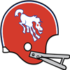
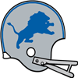
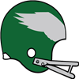

AFL Pro Bowl announced!The AFL Conference has announced their Pro Bowl squad for 1966.
QB Ed Brown - Bills (241/361, 4622 yds, 43 TD)
QB John Hadl - Chargers (300/436, 4368 yds, 44 TD)
RB Steve Thurlow - Jets (222 att, 1001 yds, 8 TD, 22 rec, 133 yds, 1 TD)
RB Ken Willard - Oilers (215 att, 907 yds, 7 TD, 28 rec, 165 yds, 1 TD)
RB Larry Garron - Chargers (191 att, 1035 yds, 8 TD, 26 rec, 223 yds, 3 TD)
FB Keith Lincoln - Chargers (20 att, 137 yds, 1 TD, 20 rec, 137 yds, 1 TD)
G Billy Shaw - Bills (62 Pancakes)
G Tom Mack - Chargers (66 Pancakes)
T Dick Schafrath - Bills (80 Pancakes)
T Doug Davis - Bills (86 Pancakes)
C Joel Benson - Dolphins (69 Pancakes)
C Jim Otto - Raiders (57 Pancakes)
TE John Hilton - Bills (45 rec, 835 yds, 6 TD)
TE Tom Mitchell - Bills (33 rec, 798 yds, 6 TD)
WR Glenn Bass - Bills (77 rec, 1422 yds, 10 TD)
WR Samuel Pitman - Patriots (90 rec, 1629 yds, 12 TD)
WR Don Maynard - Jets (114 rec, 1441 yds, 8 TD)
WR Frank Jackson - Chiefs (78 rec, 1122 yds, 13 TD)
WR Lance Alworth - Chargers (70 rec, 1611 yds, 16 TD)
CB Don Webb - Patriots (65 Tck, 2 Int, 7 FF, 4 FR)
CB Jim Norton - Oilers (74 Tck, 3 Int, 1 Def TD, 3 FF, 1 FR)
CB Pat Gucciardo - Chargers (63 Tck, 7 Int, 2 Def TD, 2 FF, 1 FR)
LB Chris Hanburger - Bills (108 Tck, 8 Sck, 2 Int, 1 Sfty, 3 FF)
LB Ray Nitschke - Oilers (95 Tck, 10 Sck, 1 FF)
LB E.J. Holub - Chiefs (111 Tck, 7 Sck, 3 FF, 1 FR)
LB Ed Beard - Chiefs (95 Tck, 6 Sck, 1 Sfty, 1 FF, 2 FR)
DT Houston Antwine - Patriots (23 Tck, 8 Sck, 1 FF, 1 FR)
DT Earl Johnson - Oilers (25 Tck, 5 Sck)
DE Jerry Mays - Jets (48 Tck, 15 Sck, 3 FF)
DE Jim Marshall - Raiders (35 Tck, 9 Sck, 3 FF)
FS Willie Brown - Jets (90 Tck, 4 Sck, 1 Int, 2 FF)
FS Hagood Clarke - Chargers (64 Tck, 1 Sck, 3 Int, 2 Def TD, 3 FF, 3 FR)
SS Dean Derby - Bills (88 Tck, 1 Sck, 1 Int)
SS Jerry Logan - Patriots (68 Tck, 2 Sck, 1 Int, 1 Def TD, 1 FF)
K Gary Cartwright - Jets (25/28 FG)
P Manuel Connolly - Chiefs (3189 yards, 29 inside 20)NFL Pro Bowl announced!The NFL Conference has announced their Pro Bowl squad for 1966.
QB Sonny Jurgensen - Eagles (246/378, 4113 yds, 31 TD)
QB Fran Tarkenton - Vikings (271/397, 3098 yds, 25 TD)
RB Wendell Hayes - Eagles (121 att, 721 yds, 3 TD, 24 rec, 389 yds, 2 TD)
RB John David Crow - Cardinals (232 att, 1031 yds, 4 TD, 63 rec, 419 yds, 3 TD)
RB Donny Anderson - Lions (261 att, 1235 yds, 6 TD, 19 rec, 210 yds, 2 TD)
FB Earl Gros - Packers (46 att, 137 yds, 7 TD)
G Jim Skaggs - Lions (70 Pancakes)
G Kevin Handy - Lions (83 Pancakes)
T Roy Skaggs - Eagles (85 Pancakes)
T Stew Barber - Lions (129 Pancakes)
C Jon Morris - Eagles (77 Pancakes)
C Eldon Michaels - Packers (45 Pancakes)
TE John Mackey - 49ers (49 rec, 844 yds, 10 TD)
TE Mike Ditka - Bears (64 rec, 855 yds, 6 TD)
WR Gary Collins - Browns (94 rec, 1294 yds, 12 TD)
WR Roy Jefferson - Eagles (62 rec, 1164 yds, 8 TD)
WR Raymond Franklin - Falcons (109 rec, 1313 yds, 5 TD)
WR Fred Biletnikoff - Lions (77 rec, 1581 yds, 14 TD)
WR Paul Warfield - Vikings (75 rec, 1410 yds, 15 TD)
CB Mel Renfro - Browns (78 Tck, 1 Sck, 2 Int, 1 FF, 1 FR)
CB Jerry Stovall - Steelers (49 Tck, 1 Sck, 4 Int, 2 Def TD, 1 FF, 1 FR)
CB Herb Adderley - Packers (78 Tck, 2 Int, 1 Def TD)
LB Dave Wilcox - Redskins (138 Tck, 10 Sck, 2 Int, 1 Def TD, 5 FF, 3 FR)
LB Dick Butkus - 49ers (108 Tck, 12 Sck, 5 FF, 2 FR)
LB Dave Robinson - Bears (95 Tck, 12 Sck, 4 FF, 1 FR)
LB Sherrill Headrick - Vikings (86 Tck, 10 Sck, 6 FF, 2 FR)
DT Merlin Olsen - Rams (41 Tck, 12 Sck, 1 FF, 1 FR)
DT Dave Costa - Vikings (40 Tck, 11 Sck, 1 FF)
DE Willie Davis - Packers (33 Tck, 10 Sck, 4 FF, 2 FR)
DE Deacon Jones - Rams (44 Tck, 16 Sck, 6 FF)
FS Robert Chapin - Cowboys (25 Tck, 2 Sck, 5 Int, 2 Def TD, 2 FF, 1 FR)
FS Eddie Meador - Rams (69 Tck, 1 Sck, 3 Int, 1 Def TD, 4 FF, 3 FR)
SS Jesse Whittenton - Packers (65 Tck, 2 Sck, 2 Int, 1 FF, 2 FR)
SS Willie Wood - Packers (70 Tck, 1 Sck, 1 Int, 4 FF, 2 FR)
K Mike Clark - Packers (34/38 FG)
P Richard Wheeler - Steelers (3227 yards, 31 inside 20)QB Ed Brown (Buf) wins League MVP! NEW YORK -- The Buffalo Bills' QB was a landslide winner Friday in balloting by a nationwide panel of 50 sports writers and broadcasters who cover the league. Brown won the MVP award by amassing season totals of 241/361, 4622 yds, 43 TD. NEW YORK -- The Buffalo Bills' QB was a landslide winner Friday in balloting by a nationwide panel of 50 sports writers and broadcasters who cover the league. Brown won the MVP award by amassing season totals of 241/361, 4622 yds, 43 TD.
"I'm honored to receive this award because of the number of other worthy candidates who had some great years," Brown said. "It was just fun for me, truly, to watch them. I'm just glad to be a part of it."
QB Bart Starr (GB) wins Playoff MVP! NEW YORK -- The Green Bay Packers' QB took home the 1966 Playoff MVP award today. Starr won the award by amassing playoff totals of 53/71, 538 yds, 5 TD. NEW YORK -- The Green Bay Packers' QB took home the 1966 Playoff MVP award today. Starr won the award by amassing playoff totals of 53/71, 538 yds, 5 TD.
QB Ed Brown (Buf) wins Offensive Player of the Year!Buffalo Bills quarterback Ed Brown is Wolverine Studios Sports Network's Offensive Player of the Year, as selected by a panel of players, coaches and executives.
Brown received 299 first-place votes from the 583 people polled.
Brown in 1966 had 4622 yards and 43 TDs, with only 4 interceptions for a QB Rating of 144.8.LB Dave Wilcox (Was) wins Defensive Player of the Year! NEW YORK -- In his own view, Dave Wilcox put together his best professional season in 1966. How appropriate, then, that he is the Wolverine Studios Sports Newtwork 1966 Defensive Player of the Year. NEW YORK -- In his own view, Dave Wilcox put together his best professional season in 1966. How appropriate, then, that he is the Wolverine Studios Sports Newtwork 1966 Defensive Player of the Year.
The versatile Wilcox had 138 tackles, 10 sacks, 2 interceptions, and 5 forced fumbles with 1 defensive touchdowns, and was a key to the Redskins' turnaround on defense. His role on the defense earned Wilcox a majority of votes Tuesday from a nationwide panel of 50 sports writers and broadcasters who cover the league.
QB Jim Hart (MIA) wins Offensive Rookie of the Year! NEW YORK -- The Miami Dolphins' QB was a landslide winner Friday in balloting by a nationwide panel of 50 sports writers and broadcasters who cover the league. Hart won the Rookie of the Year award by amassing season totals of 303/435, 3294 yds, 24 TD. NEW YORK -- The Miami Dolphins' QB was a landslide winner Friday in balloting by a nationwide panel of 50 sports writers and broadcasters who cover the league. Hart won the Rookie of the Year award by amassing season totals of 303/435, 3294 yds, 24 TD.
CB Pat Gucciardo (SD) wins Defensive Rookie of the Year! NEW YORK -- The San Diego Chargers' CB was a landslide winner Friday in balloting by a nationwide panel of 50 sports writers and broadcasters who cover the league. Gucciardo won the Rookie of the Year award by amassing season totals of 63 Tck, 7 Int, 2 Def TD, 2 FF, 1 FR. NEW YORK -- The San Diego Chargers' CB was a landslide winner Friday in balloting by a nationwide panel of 50 sports writers and broadcasters who cover the league. Gucciardo won the Rookie of the Year award by amassing season totals of 63 Tck, 7 Int, 2 Def TD, 2 FF, 1 FR.
1966 Super BowlThe Green Bay Packers have defeated the Kansas City Chiefs in the 1966 Super Bowl.
The final score was Packers 31 - Chiefs 24.
Bart Starr - QB had a dominant game on offense playing a key part in the victory.
On defense Herb Adderley - CB had a stellar outing helping seal the win.NFL Championship GameThe Green Bay Packers have defeated the Pittsburgh Steelers in the 1966 NFL Championship Game.
The final score was Packers 38 - Steelers 17.
Bart Starr - QB had a dominant game on offense playing a key part in the victory.
On defense Johnny Sample - FS had a stellar outing providing a silver lining to the loss.AFL Championship Game The Kansas City Chiefs have defeated the Houston Oilers in the 1966 AFL Championship Game. The Kansas City Chiefs have defeated the Houston Oilers in the 1966 AFL Championship Game.
The final score was Chiefs 17 - Oilers 16.
Jim Tyrer - T had a dominant game on offense playing a key part in the victory.
On defense Bobby Lane - LB had a stellar outing providing a silver lining to the loss.
New York Jets re-signs Charles Willis as Defensive Coordinator The Jets have announced that they have given Charles Willis a new contract. Willis will continue to serve as Defensive Coordinator for 2 years earning 2 million pr year. The Jets have announced that they have given Charles Willis a new contract. Willis will continue to serve as Defensive Coordinator for 2 years earning 2 million pr year.
Pittsburgh Steelers re-signs Edwin Marx as Defensive Coordinator The Steelers have announced that they have given Edwin Marx a new contract. Marx will continue to serve as Defensive Coordinator for 4 years earning 2 million pr year. The Steelers have announced that they have given Edwin Marx a new contract. Marx will continue to serve as Defensive Coordinator for 4 years earning 2 million pr year.
Week 16: QB Joe Namath (NYJ) wins Offensive Player of the WeekThe New York Jets' Joe Namath threw 4 touchdowns, completing 26 of 40 passes for 357 yards in the Jets victory over the Denver Broncos.
After being drafted in Round 1 of the 1965 amateur draft, season number 1 for Namath, has seen some impressive numbers including 28 touchdown passes this season.Week 16: DE Jerry Mays (NYJ) wins Defensive Player of the WeekDE Jerry Mays of the New York Jets has earned the Defensive Player of the Week award. Mays finished with 6 Tck, 2 Sck.Game Recaps for Week 16Chargers - 37, Chiefs - 21
Dolphins - 20, Oilers - 14
Jets - 34, Broncos - 28
Patriots - 25, Bills - 17
Giants - 17, Redskins - 14
Eagles - 28, Steelers - 21
49ers - 50, Colts - 13
Falcons - 38, Cardinals - 28
Packers - 37, Vikings - 35
Browns - 17, Cowboys - 9
Rams - 38, Lions - 31Game of the Week: Kansas City Chiefs at San Diego ChargersOur Expert Predictions:
Jeremy Piper : San Diego Chargers
Head coach Kevin Mireles does a great job getting them prepared every week. This week will be no different. He is running an explosive defense.
Mary Moore : Kansas City Chiefs
All aboard the Chiefs hypetrain. It may come down to the wire though.
Jim Nox : San Diego Chargers
Their offense will step up this game. They are 2nd in the league passing touchdowns with 43. They are 2nd in the league passing yards per game. They average 317.8! They are maulers, 5th in the league in pancakes. They are 1st in the league average yards per rush. They are 4th in the league rushing touchdowns with 16. They are 1st in the league rushing yards per game. They average 153.5! They are 1st in the league points scored per game. They average 35.6!
Darren Francis : Kansas City Chiefs
Looking at how the teams match up, I cannot help but think that Johnny Robinson - FS is the guy to watch, this man is pivotal to the Chiefs defense. This will be a very entertaining game.
Trouble for Denver Broncos.The mood is trending downward in Denver owing to their 2-10-1 record this season. Many inside and outside the building are calling for some serious changes after this season.Defense dominates in Washington.The Redskins defensive line is beating up the men on the other side of the ball so far this season with a total of 26 sacks, 6 forced fumbles and 113 tackles in 13 games.St. Louis Cardinals pull off the upset! With an outstanding effort the St. Louis Cardinals pull off the upset against Pittsburgh Steelers. With an outstanding effort the St. Louis Cardinals pull off the upset against Pittsburgh Steelers.
Everyone had expected the Pittsburgh Steelers to handle the St. Louis Cardinals with ease, but the Cardinals just wanted it more. This was really a must win game for the Steelers, and the loss will surely put a dent in their confidence.
Is Kinder a bad influence?Reports out of Washington indicate that coaches are growing weary of the behavior of Otto Kinder - G. He needs to sort himself out.Criticism of LB Ernest Newton after Chargers-Dolphins game!Jim Hart blasted the effort of some teammates after the loss. 'These guys have to show up' he said. 'We all have to take responsibility and make sure we are prepared and some guys are letting the team down'. 'Man, I think a bunch of guys let us down. I could point the finger at many.' the 22 year old QB said. Later in the interview he seemed to indicate that Ernest Newton - LB was one of the players he had in mind.Week 15: LB Chris Hanburger (Buf) wins Defensive Player of the WeekLB Hanburger absolutely dominated in the Oilers 28-11 game with the Buffalo Bills. He finished with 12 Tck, 1 Sck, 1 Sfty, 1 FF.Week 15: QB John Hadl (SD) wins Offensive Player of the WeekThe San Diego Chargers' John Hadl threw 7 touchdowns, completing 17 of 24 passes for 362 yards in the Chargers victory over the Miami Dolphins.
After being drafted in Round 0 of the 0 amateur draft, season number 4 for Hadl, has seen some impressive numbers including 42 touchdown passes this season.Game Recaps for Week 15Oilers - 28, Bills - 11
Chiefs - 16, Patriots - 13
Chargers - 58, Dolphins - 24
Raiders - 37, Broncos - 24
49ers - 27, Vikings - 27
Falcons - 30, Cowboys - 20
Cardinals - 17, Steelers - 6
Bears - 30, Lions - 20
Redskins - 23, Eagles - 23
Packers - 47, Rams - 27
Browns - 27, Giants - 0Game of the Week: Houston Oilers at Buffalo BillsOur Expert Predictions:
Jeremy Piper : Buffalo Bills
In this game, I think that Carl Eller - DE will be a key figure in this game. Do not sleep on this guy's ability.
Mary Moore : Buffalo Bills
Of course the Bills win. Have you been living under a rock? Really this could go either way, but you will never get me to admit it.
Jim Nox : Houston Oilers
I think having a leader like Roger Brown - DT is the kind of thing that will help the Oilers win this game. This is going to be a very viewer friendly game.
Darren Francis : Houston Oilers
People tend to underestimate their offense. They are 5th in the league in sacks allowed. They are 1st in the league rushing touchdowns with 17. They are 3rd in the league rushing yards per game. They average 118.7! They are 5th in the league points scored per game. They average 29.8!
Week 14: WR Samuel Pitman (Bos) wins Offensive Player of the Week Pitman's 7 rec, 178 yds, 2 TD effort led the way for the Boston Patriots. His 178 receiving yards bring his season total to 1394 yards with 10 touchdowns on the season. Pitman's 7 rec, 178 yds, 2 TD effort led the way for the Boston Patriots. His 178 receiving yards bring his season total to 1394 yards with 10 touchdowns on the season.
Dale stating his case to history Los Angeles has confirmed that the Rams are hoping to induct Carroll Dale into their hall of fame - eventually. This has the characteristics of a media stunt, but Rams is undeniably a legend. Not just locally, but nationally. Los Angeles has confirmed that the Rams are hoping to induct Carroll Dale into their hall of fame - eventually. This has the characteristics of a media stunt, but Rams is undeniably a legend. Not just locally, but nationally.
Coach Showdown with Simon Sly (Season 1966 Week 15)Welcome to Coach Showdown with me. I'm Simon Sly. We have an odd couple for you this week.
LAWRENCE DEJESUS, HEAD COACH, KANSAS CITY CHIEFS
The Chiefs currently sit at 8-2.
Lawrence Dejesus wants to be aggressive on both sides of the ball. He loves football, and it shows that this is his dreamjob. His eagerness to discuss all aspects of the game is infectious in an organisation.
Dejesus outperforms Walters in assessing player ability.
Dejesus exhibits way more flexibility than Walters.
Dejesus is better suited to lead a team than Walters.
SIDNEY WALTERS, HEAD COACH, ATLANTA FALCONS
The Falcons currently sit at 2-9.
Sidney Walters wants to be aggressive on both sides of the ball. He is serious and unrelenting, asserts his authority and has little tolerance for distractions.
Walters has a slightly better grasp of coaching defense than Dejesus.
Week 14: DE Earl Faison (SD) wins Defensive Player of the WeekDE Faison absolutely dominated in the Chargers 45-35 game with the Buffalo Bills. He finished with 5 Tck, 2 Sck, 1 FF, 1 FR.Game Recaps for Week 14Chargers - 45, Bills - 35
Raiders - 42, Dolphins - 17
Patriots - 34, Broncos - 25
Oilers - 44, Jets - 13
Lions - 38, Browns - 13
Cowboys - 33, Eagles - 7
Packers - 21, 49ers - 21
Giants - 27, Cardinals - 24
Redskins - 41, Falcons - 7
Vikings - 31, Rams - 14
Bears - 27, Colts - 27Game of the Week: Green Bay Packers at San Francisco 49ersOur Expert Predictions:
Jeremy Piper : San Francisco 49ers
This will be watercooler talk on monday. Do not miss it.
Mary Moore : San Francisco 49ers
I do not think their offense gets enough credit. They are maulers, 3rd in the league in pancakes. They are 2nd in the league in passes of more than 20 yards. This may be one for the ages.
Jim Nox : Green Bay Packers
Head coach Robert Thompson runs a tight ship in Green Bay. I feel certain he has prepared an excellent gameplan.
Darren Francis : San Francisco 49ers
Looking at how the teams match up, I do not think there is any doubt that Bernie Casey - RB is hard to gameplan for. Look for him to dominate.
Week 13: DT Jethro Pugh (Pit) wins Defensive Player of the WeekDT Pugh absolutely dominated in the Steelers 55-7 game with the Atlanta Falcons. He finished with 2 Tck, 1 Sck, 1 Def TD, 1 FF, 1 FR.Week 13: WR Fred Biletnikoff (Det) wins Offensive Player of the WeekBiletnikoff's 10 rec, 242 yds, 1 TD effort led the way for the Detroit Lions. His 242 receiving yards bring his season total to 1270 yards with 10 touchdowns on the season.Game Recaps for Week 13Raiders - 27, Jets - 19
Oilers - 23, Patriots - 10
Chiefs - 37, Dolphins - 6
Chargers - 56, Broncos - 10
49ers - 38, Lions - 38
Vikings - 27, Colts - 19
Packers - 30, Bears - 17
Redskins - 27, Cardinals - 24
Steelers - 55, Falcons - 7
Giants - 17, Cowboys - 14
Browns - 21, Rams - 20Game of the Week: Houston Oilers at Boston PatriotsOur Expert Predictions:
Jeremy Piper : Boston Patriots
People tend to underestimate their defense. They are 1st in the league in tackles for loss. They are 1st in forced fumbles.
Mary Moore : Houston Oilers
Looking at how the teams match up, it is likely that Jim Norton - CB is likely to ruin the day for the offense. A close win.
Jim Nox : Boston Patriots
In the context of this game, I think that they have to contain Richie Petitbon - CB. I think they will fail. Expect him to show up in a big way and make a difference. When they win here, people will take notice.
Darren Francis : Houston Oilers
They are on a win streak. They will continue that streak. They will win this game.
Baltimore Colts pull off the upset! With an outstanding effort the Baltimore Colts pull off the upset against Detroit Lions. With an outstanding effort the Baltimore Colts pull off the upset against Detroit Lions.
Everyone had expected the Detroit Lions to handle the Baltimore Colts with ease, but the Colts just wanted it more. This was really a must win game for the Lions, and the loss will surely put a dent in their confidence.
Week 12: QB Ed Brown (Buf) wins Offensive Player of the WeekThe league announced Buffalo Bills quarterback Ed Brown has been named Offensive Player of the Week.
The Bills defeated the New York Jets, 52 to 24. Brown did his part, throwing 5 touchdowns, completing 19 of 32 passes for 347 yards. His outstanding performance now brings his season Touchdown to Interception Ratio to 37 to 2, and a passer rating of 148.2.Coach Showdown with Simon Sly (Season 1966 Week 13)Welcome to Coach Showdown with Simon Sly. Let us get on with it.
EDMUNDO MARTEL, HEAD COACH, HOUSTON OILERS
The Oilers currently sit at 6-4.
Edmundo Martel wants to be aggressive on both sides of the ball. He is serious and unrelenting, asserts his authority and has little tolerance for distractions.
Martel is slightly more detail oriented than Tatum.
Martel is a much sharper defensive mind than Tatum.
Martel is a better offisive mind than Tatum.
Martel exhibits way more flexibility than Tatum.
JERROD TATUM, HEAD COACH, BOSTON PATRIOTS
The Patriots currently sit at 4-4.
Jerrod Tatum wants his offense and defense to play smart, conservative football. Let the other team make the mistakes. He adapts his demeanor to the situation, and does whatever he thinks it takes to get through to his players and co-workers.
Tatum outperforms Martel in assessing player ability.
Tatum is slightly better than Martel at estimating player potential.
Tatum is better suited to lead a team than Martel.
Week 12: LB Chris Hanburger (Buf) wins Defensive Player of the WeekLB Chris Hanburger of the Buffalo Bills has earned the Defensive Player of the Week award. Hanburger finished with 11 Tck, 4 Sck, 1 Int, 1 FF.Game Recaps for Week 12Raiders - 38, Broncos - 31
Bills - 52, Jets - 24
Oilers - 44, Chiefs - 9
Patriots - 31, Dolphins - 31
Cowboys - 30, Cardinals - 12
Falcons - 35, Browns - 14
Packers - 42, Eagles - 21
Colts - 42, Lions - 36
Vikings - 20, Bears - 17
Steelers - 17, Redskins - 6
49ers - 37, Rams - 21Game of the Week: Houston Oilers at Kansas City ChiefsOur Expert Predictions:
Jeremy Piper : Houston Oilers
Look for them to continue their winstreak. This will be a very up and down affair.
Mary Moore : Kansas City Chiefs
I just have this gut feeling. A double digit win.
Jim Nox : Kansas City Chiefs
They are well coached. I am sure head coach Lawrence Dejesus has them prepared for this game.
Darren Francis : Houston Oilers
I really think their defense will make the difference. This will either be wildly entertaining or a dull grind. I see no middle between the two.
Bills racking up yards!The offense of the Bills is slaying everybody this year, posting 4927 total yards and 333 points thus far in 10 games. Quarterback Ed Brown - QB and receiver Glenn Bass - WR have clowned on opponents to the tune of 1088 yards this season, while Running Back Wray Carlton - RB has juked, jived and steamrolled his way for 509. The o-line has smashed opponents for 389 pancakes this season while giving up only 23 quarterback sacks.Week 11: DE Jerry Mays (NYJ) wins Defensive Player of the WeekDE Mays absolutely dominated in the Jets 38-28 game with the Miami Dolphins. He finished with 6 Tck, 2 Sck, 1 FF.Week 11: QB John Hadl (SD) wins Offensive Player of the WeekThe league announced San Diego Chargers quarterback John Hadl has been named Offensive Player of the Week.
The Chargers defeated the Oakland Raiders, 38 to 20. Hadl did his part, throwing 3 touchdowns, completing 29 of 35 passes for 468 yards. His outstanding performance now brings his season Touchdown to Interception Ratio to 25 to 7, and a passer rating of 114.0.Game Recaps for Week 11Chargers - 38, Raiders - 20
Oilers - 57, Bills - 16
Jets - 38, Dolphins - 28
Chiefs - 44, Patriots - 23
Steelers - 17, Cardinals - 13
Rams - 31, Packers - 19
Vikings - 28, Browns - 13
Lions - 28, Bears - 27
Redskins - 51, Eagles - 30
Colts - 48, Falcons - 0
Cowboys - 23, Giants - 10Game of the Week: Green Bay Packers at Los Angeles RamsOur Expert Predictions:
Jeremy Piper : Los Angeles Rams
I think their offense is really good. They are 2nd in the league in sacks allowed. It may come down to the wire though.
Mary Moore : Los Angeles Rams
Looking at how the teams match up, I know it is not trendy, but I think that Eddie Meador will be dominant here. He is getting paid to deliver in exactly these kinds of games.
Jim Nox : Los Angeles Rams
Head coach Anthony Kopp does a great job getting them prepared every week. This week will be no different. He makes great offensive adjustments. This may be one for the ages.
Darren Francis : Green Bay Packers
The Packers have really strong team play. You look at a player like Andy Russell - LB and what he does for a team. He makes everyone around him better. Expect a great game.
Week 10: QB Ed Brown (Buf) wins Offensive Player of the WeekThe league announced Buffalo Bills quarterback Ed Brown has been named Offensive Player of the Week.
The Raiders defeated the Buffalo Bills, 34 to 27. Brown did his part, throwing 3 touchdowns, completing 21 of 31 passes for 392 yards. His outstanding performance now brings his season Touchdown to Interception Ratio to 31 to 2, and a passer rating of 148.8.McDonald: The icon A person familiar with the Raiders says that the media presense of Tommy McDonald - WR is getting a lot of attention. His recent interviews have gathered a lot of viewers, and fans regularly chants his name when he sees the field. A person familiar with the Raiders says that the media presense of Tommy McDonald - WR is getting a lot of attention. His recent interviews have gathered a lot of viewers, and fans regularly chants his name when he sees the field.
Coach Showdown with Simon Sly (Season 1966 Week 11)Welcome to Coach Showdown with me. I'm Simon Sly. Let us get on with it.
JERROD TATUM, HEAD COACH, BOSTON PATRIOTS
The Patriots currently sit at 4-3.
Jerrod Tatum wants his offense and defense to play smart, conservative football. Let the other team make the mistakes. He adapts his demeanor to the situation, and does whatever he thinks it takes to get through to his players and co-workers.
Tatum outperforms Coleman in assessing player ability.
Tatum takes much more command and is more respected by his players than Coleman.
VICTOR COLEMAN, HEAD COACH, MIAMI DOLPHINS
The Dolphins currently sit at 2-4.
Victor Coleman wants to be aggressive on both sides of the ball. He adapts his demeanor to the situation, and does whatever he thinks it takes to get through to his players and co-workers.
Coleman is slightly more detail oriented than Tatum.
Coleman is a much sharper defensive mind than Tatum.
Coleman motivates his team a little better than Tatum.
Week 10: LB E.J. Holub (KC) wins Defensive Player of the WeekLB Holub absolutely dominated in the Chiefs 34-20 game with the San Diego Chargers. He finished with 12 Tck, 1 Sck, 1 FF, 1 FR.Game Recaps for Week 10Patriots - 17, Jets - 12
Oilers - 44, Broncos - 9
Chiefs - 34, Chargers - 20
Raiders - 34, Bills - 27
Rams - 34, Bears - 27
Lions - 33, 49ers - 27
Giants - 16, Falcons - 16
Redskins - 24, Cowboys - 10
Steelers - 24, Vikings - 17
Eagles - 33, Cardinals - 17
Packers - 30, Colts - 13Game of the Week: Pittsburgh Steelers at Minnesota VikingsOur Expert Predictions:
Jeremy Piper : Pittsburgh Steelers
They will be eager to show that their loss in that last game was an abnormality. They get their win and this game will be just another day at the office.
Mary Moore : Minnesota Vikings
Head coach Donald Chan puts them over the top in this game. He is innovative with his defense.
Jim Nox : Pittsburgh Steelers
For this match up, I think a good bet is that Leroy Kelly - RB is the kind of player you just cannot contain for a whole game.
Darren Francis : Minnesota Vikings
The Vikings are for real!
Week 9: DE Deacon Jones (LA) wins Defensive Player of the WeekDE Deacon Jones of the Los Angeles Rams has earned the Defensive Player of the Week award. Jones finished with 3 Tck, 2 Sck, 2 FF.Week 9: QB Ed Brown (Buf) wins Offensive Player of the WeekThe league announced Buffalo Bills quarterback Ed Brown has been named Offensive Player of the Week.
The Bills defeated the Kansas City Chiefs, 35 to 33. Brown did his part, throwing 5 touchdowns, completing 21 of 27 passes for 453 yards. His outstanding performance now brings his season Touchdown to Interception Ratio to 28 to 2, and a passer rating of 148.6.Game Recaps for Week 9Jets - 24, Dolphins - 17
Oilers - 20, Raiders - 13
Bills - 35, Chiefs - 33
Broncos - 42, Chargers - 38
Vikings - 34, Colts - 27
Eagles - 19, Steelers - 15
Bears - 52, 49ers - 7
Browns - 24, Redskins - 14
Cardinals - 31, Cowboys - 23
Packers - 21, Lions - 20
Rams - 34, Giants - 13Week 9: TE Jackie Smith (Det) has suffered a major injury!The Detroit Lions' TE Jackie Smith has suffered an injury: Out (8-12 weeks).Detroit Lions re-signs Joan Mortensen as Offensive CoordinatorThe Lions have announced that they have given Joan Mortensen a new contract. Mortensen will continue to serve as Offensive Coordinator for 4 years earning 2.5 million pr year.Game of the Week: Green Bay Packers at Detroit LionsOur Expert Predictions:
Jeremy Piper : Green Bay Packers
Do not sleep on this defense. They are 1st in points allowed, averaging only 12. They are 4th in run defense. Giving up only 74.3 yards per game. They are 1st in the league pass average yards per rush.
Mary Moore : Green Bay Packers
I think having a team players like Andy Russell - LB is the kind of thing that will help the Packers win this game. This will be a great game to watch.
Jim Nox : Green Bay Packers
Looking at the teams, the received view holds that Herb Adderley - CB will drive the offense crazy. It may come down to the wire though.
Darren Francis : Green Bay Packers
This should be obvious to anyone who looks a the teams.
Baltimore Colts take home the upset victory!The Baltimore Colts surprises everyone with an unlikely road win against Los Angeles Rams.
The Rams never manage to take control of the game, while the Colts kept grinding and drove the victory home. The Rams players had expected an easy victory, and this will be a bitter loss and a tough blow to the self-respect of the program. Meanwhile the Colts fans are ecstatic and are already entertaining thoughts about a cinderella future.Atlanta Falcons upset the Philadelphia Eagles! The Atlanta Falcons fans are celebrating after the Falcons took down the Philadelphia Eagles. The Atlanta Falcons fans are celebrating after the Falcons took down the Philadelphia Eagles.
In a superb effort the Falcons kept at it, and brought home the win. The Eagles are widely considered to be the better of the two programs, but with the Falcons winning the fans are hoping that the Falcons will soon be able to dance with the big boys.
Joe Namath - QB is playing great!Joe Namath - QB is looking like a man among boys out there so far this season. If he keeps playing such impressive football, he’s got a shot at becoming a hometown favorite.Meador targets DT Merlin Olsen after Rams loss.Eddie Meador pointed the finger at his fellow Rams players after they lost. 'We have to step up, all of us.' he said. 'But some guys are not stepping up and we end up losing. They need to get their head in the game', he continued. 'Man, I think a bunch of guys let us down. I could point the finger at many.' the 29 year old FS said. Later in the interview he seemed to indicate that Merlin Olsen - DT was one of the players he had in mind.Week 8: RB Cannonball Butler (Oak) wins Offensive Player of the WeekThe honor comes after Butler's 21 att, 128 yds, 2 TD, 4 rec, 46 yds, 1 TD performance against the Miami Dolphins. Butler from Edward Waters was selected in round 1, 1 years ago.
Butler now has 367 Rushing Yards and 4 Touchdowns for the season.Starr: The iconNews in Green Bay is that the media presense of Bart Starr - QB is getting a lot of attention. His recent interviews have gathered a lot of viewers, and fans regularly chants his name when he sees the field.Coach Showdown with Simon Sly (Season 1966 Week 9)Simon Sly is here to bring you another edition of Coach Showdown. This is an interesting week.
EDWIN MARX, DEFENSIVE COORDINATOR, PITTSBURGH STEELERS
The Steelers currently sit at 5-1.
Edwin Marx wants to stay unpredictable on defense, favoring a balanced approach. He is serious and unrelenting, asserts his authority and has little tolerance for distractions.
Edwin Marx runs a 3-4 defense. The defense revolves around the linebackers. He prefers mixing up coverage. Marx aims to field versatile linebackers.
They are 20th in sacks with 12.
They are 8th in points allowed, averaging 17.4.
They are 7th in pass defense with 227.6 yards given up per game.
They are 2nd in run defense. Giving up 67.7 yards per game.
They are 8th in interceptions with 5.
They are 8th in the league in tackles for loss.
They are 15th in forced fumbles.
Marx makes his players hit the weight room more often than Hutcheson.
ALFONSO HUTCHESON, DEFENSIVE COORDINATOR, WASHINGTON REDSKINS
The Redskins currently sit at 4-1.
Alfonso Hutcheson does not like gambling on defense. Advocating a bend, but don't break mindset. Professionalism is the key for him. He demands accountability from everyone around him.
Alfonso Hutcheson runs a 4-3 defense. The defense revolves around the linebackers. It features primarily zone coverage. He targets the rungame, daring the offense to pass. He wants fast linebackers, who can help in coverage.
They are 5th in sacks with 23.
They are 3rd in points allowed, averaging 15.
They are 13th in pass defense with 248.8 yards given up per game.
They are 8th in run defense. Giving up 86 yards per game.
They are 1st in interceptions with 7.
They are 12th in the league in tackles for loss.
They are 9th in forced fumbles.
Hutcheson outperforms Marx in scouting.
Hutcheson is significantly better than Marx in assessing the ability of players.
Hutcheson exhibits way more flexibility than Marx.
Hutcheson seems a little bit smarter than Marx.
Hutcheson is better suited to lead a team than Marx.
Week 8: CB Pat Gucciardo (SD) wins Defensive Player of the WeekCB Pat Gucciardo of the San Diego Chargers has earned the Defensive Player of the Week award. Gucciardo finished with 7 Tck, 3 Int, 1 Def TD.Game Recaps for Week 8Chiefs - 35, Broncos - 17
Bills - 23, Patriots - 14
Raiders - 34, Dolphins - 31
Chargers - 30, Oilers - 10
Falcons - 24, Eagles - 17
Lions - 30, Vikings - 20
Cardinals - 28, Redskins - 21
Colts - 33, Rams - 3
Packers - 24, Bears - 10
Steelers - 27, Giants - 12
49ers - 34, Browns - 24Boston Patriots re-signs Todd Hickman as Offensive CoordinatorThe Patriots have announced that they have given Todd Hickman a new contract. Hickman will continue to serve as Offensive Coordinator for 4 years earning 2 million pr year.Pittsburgh Steelers re-signs Joseph Conn as Head CoachThe Steelers have announced that they have given Joseph Conn a new contract. Conn will continue to serve as Head Coach for 5 years earning 6.5 million pr year.Trade AlertThe Chiefs trade Dan Grimm - G and a Chiefs 1967 7th Round Pick to the Packers for Gary Kirner - G.Game of the Week: Detroit Lions at Minnesota VikingsOur Expert Predictions:
Jeremy Piper : Minnesota Vikings
This will be a very entertaining game.
Mary Moore : Minnesota Vikings
Surely, the Vikings win. Do not let anyone tell you otherwise. They get their win and this game will be just another day at the office.
Jim Nox : Minnesota Vikings
I really think their defense will make the difference. They are 1st in points allowed, averaging only 11.2. They are 2nd in pass defense. They only give up 181.2 per game. This will either be wildly entertaining or a dull grind. I see no middle between the two.
Darren Francis : Minnesota Vikings
Look for their offense to dominate. This may be where we see their true colors.
Samuel Pitman - WR is playing great!Samuel Pitman - WR is looking good out there so far this season. If he keeps playing such fantastic football, he’s got a shot at becoming a hometown favorite.Week 7: QB Jim Hart (MIA) wins Offensive Player of the WeekThe Miami Dolphins' Jim Hart threw 3 touchdowns, completing 33 of 41 passes for 422 yards in the Dolphins victory over the Buffalo Bills.
After being drafted in Round 1 of the 1966 amateur draft, season number 0 for Hart, has seen some impressive numbers including 14 touchdown passes this season.Week 7: DE Deacon Jones (LA) wins Defensive Player of the WeekDE Jones absolutely dominated in the Rams 22-21 game with the San Francisco 49ers. He finished with 10 Tck, 4 Sck, 1 FF.Game Recaps for Week 7Chiefs - 35, Raiders - 14
Jets - 30, Chargers - 20
Dolphins - 34, Bills - 31
Patriots - 38, Broncos - 21
Rams - 22, 49ers - 21
Packers - 37, Browns - 10
Eagles - 10, Cowboys - 9
Cardinals - 17, Giants - 17
Bears - 10, Vikings - 7
Lions - 49, Colts - 10
Steelers - 19, Falcons - 9Week 7: TE Fred Arbanas (Pit) has suffered a major injury!The Pittsburgh Steelers' TE Fred Arbanas has suffered an injury: Out (12-16 weeks).Trade Alert The Giants trade Randy Johnson - QB and a Giants 1967 5th Round Pick to the Oilers for John Thibodeau - QB. The Giants trade Randy Johnson - QB and a Giants 1967 5th Round Pick to the Oilers for John Thibodeau - QB.
Trade AlertThe Falcons trade Lloyd Voss - DE and a Falcons 1967 7th Round Pick to the Redskins for Larry Eisenhauer - DE.Game of the Week: Chicago Bears at Minnesota VikingsOur Expert Predictions:
Jeremy Piper : Minnesota Vikings
They will keep their winstreak going. A double digit win.
Mary Moore : Chicago Bears
I really think their offense will make the difference. They are 3rd in the league rushing yards per game. They average 114.8!
Jim Nox : Minnesota Vikings
When you consider the two rosters, I see that Sherrill Headrick - LB can take over a game. The Vikings defense is great when he shows up. A tough choice. I think it will be a close game.
Darren Francis : Chicago Bears
Certainly, this defense will have a good game.
Top receiver trio?The Bills trio of Don Norton - WR, Glenn Bass - WR and Tom Mitchell - TE are currently the leading trio of pass catchers in the league, with 15 receving touchdowns between the three.Week 6: QB Fran Tarkenton (Min) wins Offensive Player of the Week The league announced Minnesota Vikings quarterback Fran Tarkenton has been named Offensive Player of the Week. The league announced Minnesota Vikings quarterback Fran Tarkenton has been named Offensive Player of the Week.
The Vikings defeated the Los Angeles Rams, 34 to 6. Tarkenton did his part, throwing 3 touchdowns, completing 24 of 36 passes for 329 yards. His outstanding performance now brings his season Touchdown to Interception Ratio to 8 to 1, and a passer rating of 112.1.
Coach Showdown with Simon Sly (Season 1966 Week 7)Welcome to Coach Showdown with me. I'm Simon Sly. Let us get on with it.
NATHAN HYDE, OFFENSIVE COORDINATOR, CLEVELAND BROWNS
The Browns currently sit at 2-3.
Nathan Hyde likes to mix it up on offense, switching between aggressive and conservative styles. He is a silent, strong leader. He does his job meticulously without making unnecessary waves, and expects those around him to do the same.
Nathan Hyde runs a run first Spread Hybrid offense. Fullbacks are not utilized much. It's about taking what the defense gives you in the passing game, according to Hyde.
They are 10th in the league pass completion percentage. They are 10th in the league passing touchdowns with 9. They are 19th in the league passing yards per game. Averaging 223.4.They are 1st in the league in sacks allowed.They are 20th in the league in pancakes.They are 23rd in the league in passes of more than 20 yards.They are 3rd in the league average yards per rush.They are 9th in the league rushing touchdowns with 4.They are 7th in the league rushing yards per game. They average 104.4.They are 10th in the league points scored per game. With an average of 24.4.
Hyde is better suited to lead a team than Hickman.
TODD HICKMAN, OFFENSIVE COORDINATOR, BOSTON PATRIOTS
The Patriots currently sit at 2-2.
Todd Hickman runs his offense conservatively. He is a silent, strong leader. He does his job meticulously without making unnecessary waves, and expects those around him to do the same.
Todd Hickman runs a run first Power offense. He wants running backs who can also block. Hickman prefers running up the middle. It's about taking what the defense gives you in the passing game, according to Hickman. The passing game is predicated on spreading the ball around to multiple targets.
They are 16th in the league pass completion percentage.
They are 12th in the league passing touchdowns with 9.
They are 15th in the league passing yards per game. Averaging 239.
They are 14th in the league in sacks allowed.
They are 19th in the league in pancakes.
They are 6th in the league in passes of more than 20 yards.
They are 22nd in the league average yards per rush.
They are 11th in the league rushing touchdowns with 4.
They are 23rd in the league rushing yards per game. They average 79.6.
They are 9th in the league points scored per game. With an average of 25.
Week 6: CB George Saimes (Was) wins Defensive Player of the WeekCB Saimes's ball hawking ability was on display in the Redskins 31-21 game with the Dallas Cowboys. He finished with 2 Tck, 2 Int, 1 Def TD, 1 FF, 1 FR.
"George has the unique ability to make plays and generate turnovers." -Redskins Defensive CoordinatorGame Recaps for Week 6Jets - 31, Oilers - 21
Chiefs - 54, Broncos - 7
Chargers - 36, Dolphins - 36
Patriots - 23, Raiders - 7
Bears - 28, Colts - 21
Eagles - 40, Cardinals - 24
Vikings - 34, Rams - 6
Redskins - 31, Cowboys - 21
Packers - 15, 49ers - 6
Giants - 29, Falcons - 9
Steelers - 23, Browns - 17Trade Alert The Oilers trade Roger Anderson - DT and a Oilers 1967 4th Round Pick to the Lions for Roger Brown - DT. The Oilers trade Roger Anderson - DT and a Oilers 1967 4th Round Pick to the Lions for Roger Brown - DT.
Trade AlertThe Redskins trade Bob Khayat - G and a Redskins 1967 5th Round Pick to the Bills for Otto Kinder - G.Trade AlertThe Packers trade Johnny Holmes - DE and a Packers 1967 4th Round Pick to the Patriots for Don Hultz - DE.Trade AlertThe Cardinals trade M.C. Reynolds - QB and a Cardinals 1967 3rd Round Pick to the Broncos for Earl Morrall - QB.Game of the Week: Dallas Cowboys at Washington RedskinsOur Expert Predictions:
Jeremy Piper : Dallas Cowboys
For this match up, my perspective is that we have to look at Robert Chapin - FS. This guy has been a beast this season. That beast is going to eat up the offense this week as well. This will be a very up and down affair.
Mary Moore : Washington Redskins
You got to like this defense. They are 1st in sacks with 19. They are 1st in points allowed, averaging only 10.2. They are 3rd in run defense. Giving up only 70.2 yards per game. They are 2nd in interceptions with 5.
Jim Nox : Washington Redskins
I just have this gut feeling.
Darren Francis : Dallas Cowboys
They won their last game, they will win this game.
Who is the better G? Packers' Jerry Kramer weighs inG Jerry Kramer sparked up a friendly rivalry with Stan Jones in an interview with local news. Jerry Kramer brings up Stan Jones every chance he gets, it seems. 'Is he faster than me? nah. Look at the tape, once the pads come on he slows down. Sure, he is good and he may even be as good as me some day.' The Packers G said. Certainly such words will set the internet forums on fire, and it will be interesting to see if Stan Jones takes the bait and responds.Week 5: LB Sam Huff (NYG) wins Defensive Player of the WeekLB Sam Huff of the New York Giants has earned the Defensive Player of the Week award. Huff finished with 4 Tck, 1 Sck, 1 Int, 1 Def TD, 1 FF.Week 5: QB Ed Brown (Buf) wins Offensive Player of the WeekThe Buffalo Bills' Ed Brown threw 5 touchdowns, completing 22 of 42 passes for 503 yards in the Broncos victory over the Buffalo Bills.
After being drafted in Round 0 of the 0 amateur draft, season number 12 for Brown, has seen some impressive numbers including 18 touchdown passes this season.Game Recaps for Week 5Oilers - 38, Dolphins - 24
Jets - 24, Chiefs - 24
Patriots - 17, Chargers - 14
Broncos - 45, Bills - 38
Lions - 45, Rams - 3
Giants - 55, Eagles - 14
Redskins - 42, Falcons - 17
Browns - 38, Cardinals - 10
Packers - 20, Colts - 19
Cowboys - 36, Steelers - 22
49ers - 20, Bears - 7Trade AlertThe Chiefs trade Jon Gilliam - C and a Chiefs 1967 5th Round Pick to the Vikings for Ray Kubala - C.Trade Alert The Cowboys trade Jack Patel - C and a Cowboys 1967 7th Round Pick to the Packers for Jim Ringo - C. The Cowboys trade Jack Patel - C and a Cowboys 1967 7th Round Pick to the Packers for Jim Ringo - C.
Trade AlertThe Cardinals trade Don Oakes - T and a Cardinals 1967 4th Round Pick to the Oilers for Walt Suggs - T.Game of the Week: Dallas Cowboys at Pittsburgh SteelersOur Expert Predictions:
Jeremy Piper : Dallas Cowboys
I have a lot of respect for head coach John Davis. He is doing great things in Dallas. He is doing some really smart things on offense. He is innovative with his defense. The way they win this game will tell a lot about what they are as a team.
Mary Moore : Pittsburgh Steelers
When you think of the players that will be on the field, a good bet is that Dan Currie - LB can drive quarterbacks crazy. Look for him to dominate.
Jim Nox : Pittsburgh Steelers
I really think their defense will make the difference. They are 5th in points allowed, averaging only 16. They are 3rd in run defense. Giving up only 70.7 yards per game. They are 5th in interceptions with 2.
Darren Francis : Pittsburgh Steelers
This game will be so very entertaining.
Coach Showdown with Simon Sly (Season 1966 Week 5)Welcome to Coach Showdown with Simon Sly. Let us jump right in.
NEAL ROBERTS, DEFENSIVE COORDINATOR, SAN FRANCISCO 49ERS
The 49ers currently sit at 1-2.
Neal Roberts does not like gambling on defense. Advocating a bend, but don't break mindset. He loves football, and it shows that this is his dreamjob. His eagerness to discuss all aspects of the game is infectious in an organisation.
Neal Roberts runs a 4-3 defense. His system requires top notch cornerbacks. It features primarily zone coverage. He targets the rungame, daring the offense to pass. Roberts aims to field versatile linebackers.
They are 5th in sacks with 11.
They are 17th in points allowed, averaging 27.3.
They are 8th in pass defense with 218 yards given up per game.
They are 4th in run defense. Giving up 72.3 yards per game.
They are 22nd in interceptions with 0.
They are 22nd in the league in tackles for loss.
They are 16th in forced fumbles.
Roberts exhibits way more flexibility than Marx.
Roberts seems a little bit smarter than Marx.
Roberts is better suited to lead a team than Marx.
Roberts works with young players somewhat better than Marx.
EDWIN MARX, DEFENSIVE COORDINATOR, PITTSBURGH STEELERS
The Steelers currently sit at 2-0.
Edwin Marx wants to stay unpredictable on defense, favoring a balanced approach. He is serious and unrelenting, asserts his authority and has little tolerance for distractions.
Edwin Marx runs a 3-4 defense. The defense revolves around the linebackers. He prefers mixing up coverage. Marx aims to field versatile linebackers.
They are 10th in sacks with 8.
They are 5th in points allowed, averaging 16.
They are 6th in pass defense with 215.7 yards given up per game.
They are 3rd in run defense. Giving up 70.7 yards per game.
They are 5th in interceptions with 2.
They are 16th in the league in tackles for loss.
They are 9th in forced fumbles.
Marx makes his players hit the weight room more often than Roberts.
Week 4: QB John Hadl (SD) wins Offensive Player of the WeekThe league announced San Diego Chargers quarterback John Hadl has been named Offensive Player of the Week.
The Raiders defeated the San Diego Chargers, 42 to 35. Hadl did his part, throwing 5 touchdowns, completing 29 of 39 passes for 514 yards. His outstanding performance now brings his season Touchdown to Interception Ratio to 10 to 1, and a passer rating of 131.7.Week 4: LB Dick Butkus (SF) wins Defensive Player of the Week LB Butkus absolutely dominated in the 49ers 30-28 game with the Baltimore Colts. He finished with 12 Tck, 2 Sck. LB Butkus absolutely dominated in the 49ers 30-28 game with the Baltimore Colts. He finished with 12 Tck, 2 Sck.
Game Recaps for Week 4Dolphins - 27, Broncos - 27
Chiefs - 31, Oilers - 12
Raiders - 42, Chargers - 35
Jets - 24, Bills - 17
Steelers - 21, Cowboys - 17
Redskins - 20, Giants - 0
Lions - 21, Cardinals - 14
Eagles - 46, Falcons - 21
49ers - 30, Colts - 28
Vikings - 17, Packers - 14
Bears - 31, Browns - 13Trade AlertThe 49ers trade Terry Kosens - SS and a 49ers 1967 5th Round Pick to the Redskins for Jim Steffen - SS.Game of the Week: Green Bay Packers at Minnesota VikingsOur Expert Predictions:
Jeremy Piper : Green Bay Packers
I do not think their defense gets enough credit. They are 2nd in points allowed, averaging only 10. If they lose this one, I will never hear the end of it.
Mary Moore : Minnesota Vikings
The Vikings win. You can quote me on that.
Jim Nox : Minnesota Vikings
In the context of this game, it seems obvious that Wally Hilgenberg - LB is the kind of player who will give the offense nightmares. They win big.
Darren Francis : Green Bay Packers
Head coach Robert Thompson runs a tight ship in Green Bay. I feel certain he has prepared an excellent gameplan. But it will be much closer than many think..
Week 3: LB Dave Wilcox (Was) wins Defensive Player of the WeekLB Dave Wilcox of the Washington Redskins has earned the Defensive Player of the Week award. Wilcox finished with 12 Tck, 2 Sck, 1 FF.Week 3: QB Sonny Jurgensen (Phi) wins Offensive Player of the WeekThe Philadelphia Eagles' Sonny Jurgensen threw 4 touchdowns, completing 25 of 35 passes for 402 yards in the Eagles victory over the Cleveland Browns.
After being drafted in Round 0 of the 0 amateur draft, season number 9 for Jurgensen, has seen some impressive numbers including 6 touchdown passes this season.Game Recaps for Week 3Chiefs - 27, Raiders - 27
Oilers - 31, Broncos - 7
Bills - 42, Dolphins - 24
Jets - 34, Patriots - 24
Vikings - 17, Lions - 13
Redskins - 31, 49ers - 7
Cardinals - 24, Falcons - 23
Rams - 24, Colts - 21
Cowboys - 27, Bears - 10
Steelers - 20, Giants - 14
Eagles - 38, Browns - 20Game of the Week: Buffalo Bills at Miami DolphinsOur Expert Predictions:
Jeremy Piper : Buffalo Bills
I do not know why. I just have this hunch.
Mary Moore : Miami Dolphins
I do not think you get very far against their defense. Expect a great game.
Jim Nox : Miami Dolphins
If they do not win, I have to buy cake for the entire office. That is how sure I am.
Darren Francis : Buffalo Bills
I do not think you get very far against their offense. They might even blow them out.
Trouble in MiamiAn anonymous player in the Dolphins' locker room has indicated that coaches are struggling to contain the tensions in the Dolphins' locker room. It is constant work to prevent conflicts. Coaches came running onto the turf earlier this week in training when Ron Torres - TE alledgedly shoved Nick Rassas - CB to the ground. This led Nick Rassas - CB to embark on an explicit-laden tirade. Eventually, Rassas had to be taken into the locker room by the coaches.Coach Showdown with Simon Sly (Season 1966 Week 3)Simon Sly is back with this week's edition of Coach Showdown. Let us get on with it.
NEAL ROBERTS, DEFENSIVE COORDINATOR, SAN FRANCISCO 49ERS
The 49ers currently sit at 0-1.
Neal Roberts does not like gambling on defense. Advocating a bend, but don't break mindset. He loves football, and it shows that this is his dreamjob. His eagerness to discuss all aspects of the game is infectious in an organisation.
Neal Roberts runs a 4-3 defense. His system requires top notch cornerbacks. It features primarily zone coverage. He targets the rungame, daring the offense to pass. Roberts aims to field versatile linebackers.
They are 11th in sacks with 4.
They are 13th in points allowed, averaging 23.
They are 11th in pass defense with 250 yards given up per game.
They are 9th in run defense. Giving up 63 yards per game.
They are 17th in interceptions with 0.
They are 19th in the league in tackles for loss.
They are 20th in forced fumbles.
Roberts outperforms Carter in scouting.
Roberts is not as rigid as Carter.
Roberts is better suited to lead a team than Carter.
MAURICE CARTER, DEFENSIVE COORDINATOR, PHILADELPHIA EAGLES
The Eagles currently sit at 0-1.
Maurice Carter does not like gambling on defense. Advocating a bend, but don't break mindset. His attitude is relaxed, and he is good at making everyone around him feel comfortable and promotes a friendly and unceremonial atmosphere in the organisation.
Maurice Carter runs a 4-3 Hybrid defense. The defense revolves around the linebackers. He prefers mixing up coverage. He targets the rungame, daring the offense to pass. Carter aims to field versatile linebackers.
They are 15th in sacks with 2.
They are 11th in points allowed, averaging 20.
They are 6th in pass defense with 215 yards given up per game.
They are 21st in run defense. Giving up 118 yards per game.
They are 9th in interceptions with 0.
They are 7th in the league in tackles for loss.
They are 8th in forced fumbles.
Carter outperforms Roberts in assessing player ability.
Carter makes his players hit the weight room more often than Roberts.
Week 2: CB Pat Gucciardo (SD) wins Defensive Player of the WeekCB Gucciardo's ball hawking ability was on display in the Chargers 35-14 game with the Houston Oilers. He finished with 3 Tck, 3 Int, 1 Def TD, 1 FR.
"Pat has the unique ability to make plays and generate turnovers." -Chargers Defensive CoordinatorWeek 2: QB Ed Brown (Buf) wins Offensive Player of the WeekThe league announced Buffalo Bills quarterback Ed Brown has been named Offensive Player of the Week.
The Bills defeated the Oakland Raiders, 52 to 27. Brown did his part, throwing 5 touchdowns, completing 28 of 31 passes for 532 yards. His outstanding performance now brings his season Touchdown to Interception Ratio to 11 to 0, and a passer rating of 155.3.Game Recaps for Week 2Dolphins - 37, Patriots - 34
Chiefs - 19, Jets - 14
Chargers - 35, Oilers - 14
Bills - 52, Raiders - 27
Browns - 34, Colts - 6
Redskins - 17, Steelers - 17
Vikings - 23, 49ers - 13
Rams - 35, Bears - 28
Giants - 20, Eagles - 14
Packers - 33, Lions - 10
Cowboys - 13, Falcons - 3Game of the Week: Baltimore Colts at Cleveland BrownsOur Expert Predictions:
Jeremy Piper : Cleveland Browns
You just have to look at their defense.
Mary Moore : Baltimore Colts
I love what they are doing in Baltimore coaching-wise. Head coach Matthew Hart is a major reason they will win this game. He is running an explosive defense. He is preparation and gameplanning is great. A single digit win.
Jim Nox : Baltimore Colts
They have a dominant offense. They do not get enough credit for that. When they win here, people will take notice.
Darren Francis : Baltimore Colts
The Colts win. I see no reason to think otherwise. Expect a great game.
Arnett cementing his status.Rumors on social media are swirling that the media presense of Jon Arnett - FB is getting a lot of attention. His recent interviews have gathered a lot of viewers, and fans regularly chants his name when he sees the field.Week 1: QB Ed Brown (Buf) wins Offensive Player of the WeekThe league announced Buffalo Bills quarterback Ed Brown has been named Offensive Player of the Week.
The Bills defeated the Denver Broncos, 52 to 31. Brown did his part, throwing 6 touchdowns, completing 20 of 34 passes for 604 yards. His outstanding performance now brings his season Touchdown to Interception Ratio to 6 to 0, and a passer rating of 142.8.Week 1: CB Fred Williamson (Oak) wins Defensive Player of the WeekCB Fred Williamson of the Oakland Raiders has earned the Defensive Player of the Week award. Williamson finished with 3 Tck, 3 Int, 1 Def TD.Game Recaps for Week 1Raiders - 27, Patriots - 27
Bills - 52, Broncos - 31
Chargers - 38, Jets - 26Preseason Week 3: DT Horacio Flowers (GB) has suffered a major injury!The Green Bay Packers' DT Horacio Flowers has suffered an injury: Out (8-12 weeks).Preseason Week 1: CB Claude Crabb (Was) has suffered a major injury!The Washington Redskins' CB Claude Crabb has suffered an injury: Out (8-12 weeks).Season PredictionsThe sports journalists association has published the results of this year's division prediction polls among their twenty top sports journalists.
NFL East: Dallas Cowboys with 12 votes (Runner up: Cleveland Browns with 4 votes)
NFL West: Green Bay Packers with 9 votes (Runner up: Baltimore Colts with 8 votes)
AFL East: Buffalo Bills with 9 votes (Runner up: Boston Patriots with 7 votes)
AFL West: Kansas City Chiefs with 11 votes (Runner up: San Diego Chargers with 7 votes)Trade AlertThe Chargers trade Johnny Counts - RB and a Chargers 1967 5th Round Pick to the Redskins for Darrell Price - RB.Trade AlertThe Steelers trade Max Choboian - QB and a Steelers 1967 4th Round Pick to the Patriots for Ted Hall - QB.Game of the Week: Denver Broncos at Buffalo BillsOur Expert Predictions:
Jeremy Piper : Denver Broncos
This is a dominant offense. I expect some incredible plays in this game.
Mary Moore : Buffalo Bills
Looking at the two rosters, I suspect that Bills have got to love fielding Mike Stratton - LB on their defense. This man will be critical this week, and will give the offense plenty of trouble.
Jim Nox : Buffalo Bills
Surely, the Bills win. Do not let anyone tell you otherwise.
Darren Francis : Denver Broncos
I see them winning this week, and it will be good for them to break their losing streak. A tough choice. I think it will be a close game.
San Diego Chargers fans are excited.News from the camp of San Diego Chargers has it that Clarke, H. - FS has been blowing the minds of coaches and fans. Clarke was expected to contribute early, but his development in camp has still been a pleasant surprise for everyone.Houston Oilers fans are excited.News from the camp of Houston Oilers has it that Hall, L. - FS has been blowing the minds of coaches and fans. Hall was expected to contribute early, but his development in camp has still been a pleasant surprise for everyone.Training Camp highlightsIt looks like Minnesota Vikings hit the jackpot when they drafted Hilgenberg, W. - LB this year. Hilgenberg has delivered astonishing progress in trainingcamp. The sky is the ceiling for this kid!Training Camp NewsOsborn, D. - RB from New York Giants is living up to his round 1 selection by putting in an astonishing training camp. Reports out of the camp suggest the coaches and fans alike can't wait to see him on gameday.A hidden gem?Barnes, W. - DT has turned some heads at the training facility of the Washington Redskins. The undrafted rookie free agent has put together an astonishing training camp. Reports out of the camp suggest the coaches and fans are excited to see if he can continue his development.A hidden gem? Logan, O. - CB has turned some heads at the training facility of the Cleveland Browns. The undrafted rookie free agent has put together an astonishing training camp. Reports out of the camp suggest the coaches and fans are excited to see if he can continue his development. Logan, O. - CB has turned some heads at the training facility of the Cleveland Browns. The undrafted rookie free agent has put together an astonishing training camp. Reports out of the camp suggest the coaches and fans are excited to see if he can continue his development.
RB Amos Bullocks (N/A) has retired!RB Amos Bullocks (54 ovr) has retired after failing to get signed in free agency.G Ken Adamson (N/A) has retired!G Ken Adamson (64 ovr) has retired after failing to get signed in free agency.G Dan Ficca (N/A) has retired!G Dan Ficca (51 ovr) has retired after failing to get signed in free agency.P Julio Tapia (N/A) has retired!P Julio Tapia (54 ovr) has retired after failing to get signed in free agency.Post Free Agency RetirementsThe following players have retired after going unsigned through free agency:
WR Herman Linton
WR Donnie Davis
WR Jerry Tarr
WR Elbert Dubenion
WR James Tapp
LB Fred Brown
LB Ed Meixler
LB Dick Hermann
LB Gene JeterFree Agency Round 10: Round Up39 players signed this week.
The biggest name signing this week was Sid Blanks. The RB out of Texas A&M-Kingsville signed a $110,000 contract for 2 year(s) with New York Giants.
NFL East was the most active division with a total of 25 signings.
Washington Redskins was the most active signing a total of 4 player(s).
The biggest spender was Los Angeles Rams who signed 4 player(s) for a total of $270,000.Free Agency Round 9: Round Up43 players signed this week.
The biggest name signing this week was Mark Johnston. The CB out of Northwestern signed a $240,000 contract for 2 year(s) with Buffalo Bills.
NFL West was the most active division with a total of 22 signings.
Green Bay Packers was the most active signing a total of 4 player(s).
The biggest spender was Denver Broncos who signed 3 player(s) for a total of $480,000.Free Agency Round 8: Round Up49 players signed this week.
The biggest name signing this week was Dale Hackbart. The FS out of Wisconsin signed a $440,000 contract for 2 year(s) with Atlanta Falcons.
NFL East was the most active division with a total of 33 signings.
Atlanta Falcons was the most active signing a total of 10 player(s).
The biggest spender was Atlanta Falcons who signed 10 player(s) for a total of $920,500.Free Agency Round 7: Round Up58 players signed this week.
The biggest name signing this week was Floyd Peters. The DT out of San Francisco State signed a $320,000 contract for 3 year(s) with New York Jets.
NFL East was the most active division with a total of 48 signings.
Miami Dolphins was the most active signing a total of 13 player(s).
The biggest spender was Miami Dolphins who signed 13 player(s) for a total of $949,000.Free Agency Round 6: Round Up49 players signed this week.
The biggest name signing this week was Ernest Newton. The LB out of Nebraska signed a $420,000 contract for 2 year(s) with Miami Dolphins.
NFL East was the most active division with a total of 48 signings.
Miami Dolphins was the most active signing a total of 25 player(s).
The biggest spender was Miami Dolphins who signed 25 player(s) for a total of $4,860,500.QB Jim Hart (MIA) goes #1 overall!NEW YORK -- The Miami Dolphins drafted Jim Hart #1 overall in the 1966 draft. The 6' 1" QB fits the team's needs perfectly. Said Dolphins general manager: "It's up to us to develop him and get good players around him."
"The great thing about the game of football is, it's a team game," Hart said on a conference call. "I'm just going to be one piece of the puzzle."Moore and Nox Mock DraftPick 1: St. Louis Cardinals
Larry Moore: Tommy Nobis - LB
Known for being a bit of a joker in the locker room. but in the good way, everyone smiles when asked about him. Tackles with good leverage. Rarely lets people go. Scouts all say his speed is not a problem, he plays way faster than his forty time. He is sharp, and that makes him very coachable. Are there other guys worth picking here? Sure, but none of them fit this well with what they need, and he is a solid talent.
Jim Nox: Tommy Nobis - LB
Liked by coaches and teammates. Pretty good tackling fundamentals. That is something coaches love. You need to stay on him, or he will turn the edge on you. Teams want Defensive Ends that keep Offensive Tackles honest. Pretty smart. A player that fits their needs. The promise of a future star. This will be great for the franchise.
Pick 2: San Francisco 49ers
Larry Moore: Tom Mack - G
This is a young man who will bench press a Defensive Tackle, and not a small one! A tenacious blocker in the running game. He will open lanes. Needless to say this appeals to a lot of teams. A cerebral player. Once this kid gets in the building, they will be set at this position for years.
Jim Nox: Tom Mack - G
Rarely do a player this young bench pres this much. This kind of physical foundation given him an incredible ceiling. The defensive linemen at the pro level are bigger and meaner than those in college. Yet, as far as run blocking goes, this young man should have no trouble transitioning. Well schooled in the game, and it shows on the field. Take the blue-chip player. Do not worry about sexier picks. He fits what you need and the quality is there.
Pick 3: San Diego Chargers
Larry Moore: John Niland - G
His strength is already good, and he has not even started his professional career. I love his ability to run block, and so do coaches. He is already elite in that respect and will make a great addition in the run game. This is definitely something that pushes his value up. His college teammates all point to how smart he is. Blue-chip player. Exactly what they look for. Add a young talent to a roster thin at the position, a great fit.
Jim Nox: John Niland - G
Was among the stronger offensive linemen in college. Teams are always looking for run blockers with a mean streak. This kid fit that bill. He run blocks like a beast. Knowledgeable of the game. You need him, just get him already.
Pick 4: Atlanta Falcons
Larry Moore: Jim Hart - QB
He understands playing offense at the pro level. Coaches do not have to worry about making him throw any route. Receivers need to be on their toes because he throws hard. Fill a need, get a quality player, everyone wins! He will fit right in with the pros.
Jim Nox: Jim Hart - QB
He trusts what he sees, and what he sees is mostly right. Already making good throws, and that is even with no seasons of pro training. Has the arm strength to keep defenses on their toes. It is all about fit here. Is there a guy at a position of need, worthy of a pick this high? The answer, obviously, is 'heck yeah'.
Pick 5: Pittsburgh Steelers
Larry Moore: Terry Owens - T
Strong enough to play with the pros. This kid is already a pretty good blocker in the running game. He will only get better as he refines his technique. Reacts quickly and puts himself in a position to make a play. Fits nicely with their needs. Fits nicely with the draft spot. Getting it right is important with these early picks. This guy is right.
Jim Nox: Terry Owens - T
He has sufficient strength to have a chance against grown men on the defensive line. Has nice technique when blocking on run plays. Keeps his leverage and finishes his blocks. Consistently makes good decisions on the field. They almost have to make this pick. You do not want to look back in five years and see this kid on another team knowing he could have been yours.
Pick 6: Philadelphia Eagles
Larry Moore: Doug Buffone - LB
Not a topnotch forty time, but not bad either. Has enough quickness in his first step to do everything you ask of him. Very coachable. Rock solid player is just what they need. A great fit here, both in terms of need and quality.
Jim Nox: Doug Buffone - LB
Fast enough to get around slower Offensive Tackles. Pretty clever. Might not be what fans want, but there is a reason people are getting paid to make these decisions. This is a rock solid pick, and he fits what they are looking for. Fans will come around quickly once they see him play.
Pick 7: Oakland Raiders
Larry Moore: Al Randolph - CB
Do not fret. You need him, fans love him. Surefire pick.
Jim Nox: Brig Owens - CB
His good natured behavior, even toward opponents have earned him some criticism, but also an awful lot of respect. He is faster than his tape shows. No need to worry about his speed. Fans, coaches, and teammates alike will be ecstatic to get him on the team. He fits what they need, he is such a great talent. Everything lines up.
Pick 8: New York Jets
Larry Moore: Tom Mitchell - TE
This kid puts in the work. Sportsmanship, love of the sport and respect, is what you get with him. Here you have a guy, who really benefits the atmosphere in the building. Everyone wants to be around him. Speed is the name of the game, even at Tight End. This guy will make plays! People always say you should not prioritize needs over quality. That is not an issue here, they get to have their cake and eat it too.
Jim Nox: Tom Mitchell - TE
Due to his work ethic, this kid is very coachable. He is driven by the love of the sport. The guy has gets along with everyone. This kid has wide receiver like speed. That makes him a factor in the passing game. Blue-chip player. Exactly what they look for. Add a young talent to a roster thin at the position, a great fit.
Pick 9: New York Giants
Larry Moore: Joe Beauchamp - FS
Known for showing up early and staying late. I want this kid on my team. He understands his role on the field, and how it fits in with what everyone else is doing. Respected for his good behavior on the field. Reliably takes down ball carrier when he gets to him. His college teammates all point to how smart he is. They need him now. Well yesterday actually. They will love him tomorrow. They will revere him by the end of his career.
Jim Nox: Joe Beauchamp - FS
His college coaches talk highly of his work ethic. The ultimate team player. This is the kind of kid you want to promote the game. Well behaved, loves the game, and respectful. Wraps up tackles well. Coaches love how coachable he is. When the available talent fits what you need, there is reason to celebrate. They are getting a great talent who will serve them for many years.
Pick 10: Minnesota Vikings
Larry Moore: Pat Holmes - DE
Coaches like his strength. I do too. It will benefit him greatly on the field. Will not have to come off the field for in obvious passing situations. Has enough quickness to pressure Quarterbacks off the edge. They need playmakers at this position. This is what they are getting here. Solid pick.
Jim Nox: Al Randolph - CB
He fills a need for them. They will be happy to get him.
Free Agency Round 2: Round Up1 players signed this week.
The biggest name signing this week was Eddie LeBaron. The QB out of Pacific signed a $660,000 contract for 1 year(s) with Dallas Cowboys.
NFL East was the most active division with a total of 1 signings.
Dallas Cowboys was the most active signing a total of 1 player(s).
The biggest spender was Dallas Cowboys who signed 1 player(s) for a total of $660,000.Free Agency Round 1: Round Up6 players signed this week.
The biggest name signing this week was Ernie Stautner. The DT out of Boston College signed a $1,000,000 contract for 1 year(s) with Pittsburgh Steelers.
NFL East was the most active division with a total of 6 signings.
Atlanta Falcons was the most active signing a total of 3 player(s).
The biggest spender was Atlanta Falcons who signed 3 player(s) for a total of $2,650,000.RB Abner Haynes (ATL) signs large free agent deal!NEW YORK -- Anxious all week, RB Abner Haynes was finally catching some sleep at home in Charlotte, N.C., when he found out just how serious the Atlanta Falcons were about acquiring him.
The free-agent signing period had just begun, and Haynes's agent called to tell him that the Falcons head coach was in town. Soon, Haynes was meeting him at an executive airport.
Now, Haynes is being fitted for a Falcons uniform.
One of the league's top RBs and top free-agent prize agreed Friday to a 3 year contract worth $880,000.
"It's one thing to play football in this league and make a living, but it's a totally different thing to come to a place with a rich tradition like the Falcons," Haynes said.LB Bobby Bell (ATL) signs large free agent deal!NEW YORK -- Bobby Bell, one of the league's top LBs and top free-agent prize agreed to a 5 year contract worth $930,000 to play for the Atlanta Falcons.QB Ed Brown (Buf) signs large free agent deal!NEW YORK -- Anxious all week, QB Ed Brown was finally catching some sleep at home in Charlotte, N.C., when he found out just how serious the Buffalo Bills were about acquiring him.
The free-agent signing period had just begun, and Brown's agent called to tell him that the Bills head coach was in town. Soon, Brown was meeting him at an executive airport.
Now, Brown is being fitted for a Bills uniform.
One of the league's top QBs and top free-agent prize agreed Friday to a 1 year contract worth $840,000.
"It's one thing to play football in this league and make a living, but it's a totally different thing to come to a place with a rich tradition like the Bills," Brown said.QB Bobby Layne (ATL) signs large free agent deal!NEW YORK -- Bobby Layne, one of the league's top QBs and top free-agent prize agreed to a 1 year contract worth $840,000 to play for the Atlanta Falcons.DT Ernie Stautner (Pit) signs large free agent deal!NEW YORK -- Ernie Stautner, one of the league's top DTs and top free-agent prize agreed to a 1 year contract worth $1,000,000 to play for the Pittsburgh Steelers.Offseason Team Needs with Jeremy PiperWith a new offseason under way, some rosters are in good shape. However, other teams have big needs to address this offseason. Your always trusty Jeremy Piper here brings you a quick glance at the teams with work to do. Whether they fill their needs in the draft or with veterans in free agency remains to be seen.
Here we go:
Dallas Cowboys: QB T LB DT
Cleveland Browns: QB G T C LB DT DE SS
Philadelphia Eagles: QB LB
St. Louis Cardinals: WR CB LB DT DE
Washington Redskins: QB WR FS SS
Pittsburgh Steelers: QB G T CB LB DE
New York Giants: QB TE WR LB DE FS
Atlanta Falcons: QB RB G T C TE WR CB LB DT DE FS SS
Green Bay Packers: QB T WR CB LB DE FS SS
Baltimore Colts: QB T WR LB DT DE FS
Los Angeles Rams: WR LB DT SS
San Francisco 49ers: G T CB LB SS
Chicago Bears: QB WR LB DT DE
Detroit Lions: QB RB CB LB DE
Minnesota Vikings: CB DE
Buffalo Bills: LB DT FS
Boston Patriots: RB WR CB LB
New York Jets: C TE WR LB DT SS
Miami Dolphins: QB RB G T C TE WR CB LB DT DE FS SS
Houston Oilers: QB G C LB DT
Kansas City Chiefs: QB T WR CB DT
Oakland Raiders: WR CB DE
San Diego Chargers: G LB DT
Denver Broncos: QB WR LB SS
Denver Broncos announce new staff.Broncos revealed that they have signed Bill Hubbard as their new Offensive Coordinator. He will get a 4 year contract worth 0.5 million pr year with the Broncos.
Other news included that Broncos have signed Wayne Churchill as their new Defensive Coordinator. Churchill will get a 3 year contract worth 2 million pr year with the Broncos.San Francisco 49ers announce new staff.49ers have signed Neal Roberts as their new Defensive Coordinator. Roberts will get a 3 year contract worth 2 million pr year with the 49ers.
It was also revealed that Charles Kuykendall will be serving as the new General Manager for the 49ers . He will get a 2 year contract worth 4.3 million pr year with the 49ers.Chicago Bears announce new staff. Scott Ford will be serving as the new General Manager for the Bears . He will get a 3 year contract worth 4.8 million pr year with the Bears. Scott Ford will be serving as the new General Manager for the Bears . He will get a 3 year contract worth 4.8 million pr year with the Bears.
Buffalo Bills announce new staff.Bills have signed Everette Snow as their new Defensive Coordinator. Snow will get a 4 year contract worth 2 million pr year with the Bills.Boston Patriots announce new staff.Mike Orr will be serving as the new General Manager for the Patriots . He will get a 2 year contract worth 4.3 million pr year with the Patriots.New York Jets announce new staff.Jets revealed that they have signed Roger St. John as their new Offensive Coordinator. He will get a 3 year contract worth 2 million pr year with the Jets.Houston Oilers announce new staff.Felix Christianson will be serving as the new General Manager for the Oilers . He will get a 1 year contract worth 4.5 million pr year with the Oilers.Oakland Raiders announce new staff.David Michaud will be serving as the new General Manager for the Raiders . He will get a 3 year contract worth 3.7 million pr year with the Raiders.San Diego Chargers announce new staff.Chargers have signed Antonio Metzler as their new Defensive Coordinator. Metzler will get a 3 year contract worth 1.5 million pr year with the Chargers.Washington Redskins announce new staff.John Storey will be serving as the new General Manager for the Redskins . He will get a 1 year contract worth 4 million pr year with the Redskins.New York Giants announce new staff.Giants have signed Luke Nelson as their new Defensive Coordinator. Nelson will get a 3 year contract worth 1 million pr year with the Giants.Green Bay Packers announce new staff.Packers have signed Alvin Blythe as their new Defensive Coordinator. Blythe will get a 2 year contract worth 0.5 million pr year with the Packers.Los Angeles Rams announce new staff.Stewart Freeman will be serving as the new General Manager for the Rams . He will get a 3 year contract worth 3.8 million pr year with the Rams.Cleveland Browns announce new staff.Browns revealed that they have signed Nathan Hyde as their new Offensive Coordinator. He will get a 3 year contract worth 1.5 million pr year with the Browns.
It was also revealed that Olin Whitlow will be serving as the new General Manager for the Browns . He will get a 3 year contract worth 4.8 million pr year with the Browns.Philadelphia Eagles announce new staff.Jason Stewart will be serving as the new General Manager for the Eagles . He will get a 2 year contract worth 4.1 million pr year with the Eagles.St. Louis Cardinals announce new staff.Cardinals have signed Nicholas Kinsey as their new Defensive Coordinator. Kinsey will get a 2 year contract worth 0.5 million pr year with the Cardinals.
It was also revealed that Brandon Van will be serving as the new General Manager for the Cardinals . He will get a 3 year contract worth 4.4 million pr year with the Cardinals.Dallas Cowboys announce new staff.The Cowboys have announced that they have signed John Davis as their new Head Coach. He will get a 5 year contract worth 0.5 million pr year with the Cowboys.St. Louis Cardinals hire Ronald Forte away from ChargersThe Cardinals have announced that they have signed Ronald Forte as their new Head Coach. Forte was previously working for Chargers as Defensive Coordinator. He will get a 4 year contract worth 5.8 million per year with the Cardinals.Detroit Lions hire Larry Good away from the San Francisco 49ersThe Lions have announced that they have signed Larry Good as their new Head Coach. Good was previously working for 49ers as Defensive Coordinator. He will get a 4 year contract worth 5.5 million pr year with the Lions.Boyd Colwell staying with Atlanta FalconsThe Dallas Cowboys tried to pry Boyd Colwell away from Falcons to fill the position as their new Head Coach. However, Colwell publicly dismissed that a move was imminent, and that assured fans that he would stay with Falcons as their Offensive Coordinator for the coming season.Boston Patriots hire Jerrod Tatum away from the New York JetsThe Patriots have announced that they have signed Jerrod Tatum as their new Head Coach. Tatum was previously working for Jets as Offensive Coordinator. He will get a 2 year contract worth 7 million pr year with the Patriots.Green Bay Packers hire Robert Thompson away from the Buffalo BillsThe Packers have announced that they have signed Robert Thompson as their new Head Coach. Thompson was previously working for Bills as Defensive Coordinator. He will get a 2 year contract worth 5.3 million pr year with the Packers.Draft Order: St. Louis Cardinals own first overall.Pick 1: St. Louis Cardinals
Pick 2: San Francisco 49ers
Pick 3: San Diego Chargers
Pick 4: Atlanta Falcons
Pick 5: Pittsburgh Steelers
Pick 6: Philadelphia Eagles
Pick 7: Oakland Raiders
Pick 8: New York Jets
Pick 9: New York Giants
Pick 10: Minnesota Vikings
Pick 11: Miami Dolphins
Pick 12: Houston Oilers
Pick 13: Green Bay Packers
Pick 14: Detroit Lions
Pick 15: Denver Broncos
Pick 16: Dallas Cowboys
Pick 17: Cleveland Browns
Pick 18: Chicago Bears
Pick 19: Boston Patriots
Pick 20: Baltimore Colts
Pick 21: Washington Redskins
Pick 22: Buffalo Bills
Pick 23: Kansas City Chiefs
Pick 24: Los Angeles Rams
Coaching Carousel Predictions.The offseason is upon us and that means teams are shaking up their coaching staffs. This means that we get to take our annual look at coordinators who could make the leap to become head coaches, and the teams who are likely to poach them.
The prime candidates identified by our experts are:
William Betz - Offensive Coordinator - Green Bay Packers
Larry Good - Defensive Coordinator - San Francisco 49ers
Jerome Stevens - Defensive Coordinator - Detroit Lions
Francisco James - Offensive Coordinator - Oakland Raiders
Boyd Colwell - Offensive Coordinator - Atlanta Falcons
Robert Wilder - Offensive Coordinator - San Francisco 49ers
As always, we are prone to wild speculations, so we asked our in-house experts to do a little matchmaking between candidates and teams. Here is what they came up with:
Mary Moore:
Francisco James leaves the Raiders to become the head coach for the St. Louis Cardinals.
Darren Francis:
I think the 49ers lose Robert Wilder and I see him heading to Detroit Lions.
Jim Nox:
The Falcons cannot hold on to Boyd Colwell. I would like to see him coach the Dallas Cowboys.
Jeremy Piper:
Jerome Stevens is certainly on the move. That means Lions will need a new coordinator. As for where Stevens ends up? Well, I think Green Bay Packers is a good bet.Contract UpdatesThe following players have unlocked bonuses in their contracts based on their performance last season:
King Hill - QB (Philadelphia Eagles) unlocked a 5% bonus for Completion % (Target: 50 / Accomplished: 65.9).
Mike McClellan - CB (Philadelphia Eagles) unlocked a 5% bonus for Tackles (Target: 40 / Accomplished: 47).
Harold Olson - T (Philadelphia Eagles) unlocked a 10% bonus for Games Started (Target: 8 / Accomplished: 8).
Gene Heeter - TE (Washington Redskins) unlocked a 5% bonus for Games Started (Target: 8 / Accomplished: 13).
Darrell Price - RB (Washington Redskins) unlocked a 5% bonus for Games Started (Target: 8 / Accomplished: 9).
Hollis Talley - WR (Pittsburgh Steelers) unlocked a 5% bonus for Catches (Target: 40 / Accomplished: 66).
Greg Larson - C (New York Giants) unlocked a 5% bonus for Pancakes (Target: 20 / Accomplished: 38).
Ken Herock - TE (New York Giants) unlocked a 10% bonus for Games Started (Target: 8 / Accomplished: 12).
Art Graham - WR (New York Giants) unlocked a 5% bonus for Catches (Target: 40 / Accomplished: 53).
Alex Hawkins - RB (Baltimore Colts) unlocked a 10% bonus for Rushing TDs (Target: 5 / Accomplished: 6).
Larry Hayes - C (Los Angeles Rams) unlocked a 10% bonus for winning the championship.
Charley Britt - CB (Los Angeles Rams) unlocked a 5% bonus for winning the championship.
John LoVetere - DT (Los Angeles Rams) unlocked a 10% bonus for winning the championship.
Lucien Reeberg - T (Los Angeles Rams) unlocked a 5% bonus for winning the championship.
Don Chuy - G (Los Angeles Rams) unlocked a 5% bonus for winning the championship.
Jaime Vaughn - WR (Los Angeles Rams) unlocked a 10% bonus for Games Started (Target: 8 / Accomplished: 13).
Ed O'Bradovich - DE (Los Angeles Rams) unlocked a 5% bonus for winning the championship.
Jim Cadile - G (Chicago Bears) unlocked a 5% bonus for Pancakes (Target: 20 / Accomplished: 42).
Lee Roy Caffey - LB (Detroit Lions) unlocked a 10% bonus for Tackles (Target: 40 / Accomplished: 97).
Al Jamison - T (Detroit Lions) unlocked a 10% bonus for Pancakes (Target: 20 / Accomplished: 35).
Kevin Handy - G (Detroit Lions) unlocked a 10% bonus for Games Started (Target: 8 / Accomplished: 14).
Bill Brown - RB (Minnesota Vikings) unlocked a 10% bonus for Games Started (Target: 8 / Accomplished: 14).
Billy Gambrell - WR (Minnesota Vikings) unlocked a 5% bonus for Games Started (Target: 8 / Accomplished: 11).
Willie West - CB (Buffalo Bills) unlocked a 10% bonus for Games Started (Target: 8 / Accomplished: 14).
Otto Kinder - G (Buffalo Bills) unlocked a 10% bonus for Pancakes (Target: 20 / Accomplished: 23).
Phil King - RB (Boston Patriots) unlocked a 5% bonus for Rushing TDs (Target: 5 / Accomplished: 8).
Ray Schoenke - G (Boston Patriots) unlocked a 5% bonus for Games Started (Target: 8 / Accomplished: 13).
Mel West - RB (New York Jets) unlocked a 5% bonus for Avg. Rush Gain (Target: 4 / Accomplished: 14.2).
Paul Hynes - CB (New York Jets) unlocked a 10% bonus for Tackles (Target: 40 / Accomplished: 53).
Walt Sweeney - G (New York Jets) unlocked a 10% bonus for Games Started (Target: 8 / Accomplished: 14).
Randy Kerbow - WR (New York Jets) unlocked a 5% bonus for Receiving TDs (Target: 5 / Accomplished: 5).
Dan Grimm - G (Kansas City Chiefs) unlocked a 5% bonus for Pancakes (Target: 20 / Accomplished: 36).
Fran O'Brien - T (Oakland Raiders) unlocked a 10% bonus for Pancakes (Target: 20 / Accomplished: 22).
Tommy McDonald - WR (Oakland Raiders) unlocked a 10% bonus for Receiving TDs (Target: 5 / Accomplished: 12).
Ron Mix - T (San Diego Chargers) unlocked a 10% bonus for Pancakes (Target: 20 / Accomplished: 67).
Bob Scarpitto - WR (Denver Broncos) unlocked a 5% bonus for Catches (Target: 40 / Accomplished: 58).
To Joe Marconi - FB, the past is the past.Joe Marconi is a great story, having worked his way out of a troubled youth. To many, Marconi is becoming a posterboy for the league's ability to help talented young men rehabilitate themselves through sports.To Robert Howard - K, the past is the past.Robert Howard is a great story, having worked his way out of a troubled youth. To many, Howard is becoming a posterboy for the league's ability to help talented young men rehabilitate themselves through sports.Other retirements
QB Bob Waters (63 ovr) : Career stats: 0/0, 0 yds, 0 TD
QB Ron Vander Kelen (63 ovr) : Career stats: 0/0, 0 yds, 0 TD
QB Bob Scrabis (60 ovr) : Career stats: 0/0, 0 yds, 0 TD
QB Galen Hall (58 ovr) : Career stats: 0/0, 0 yds, 0 TD
QB Phillip Flannery (55 ovr) : Career stats: 0/0, 0 yds, 0 TD
QB Tony Moye (52 ovr) : Career stats: 0/0, 0 yds, 0 TD
QB Ed Rutkowski (52 ovr) : Career stats: 0/0, 0 yds, 0 TD
QB Arturo Dolan (46 ovr) : Career stats: 0/0, 0 yds, 0 TD
QB Mac Long (15 ovr) : Career stats: 0/0, 0 yds, 0 TD
RB Larry Henry (67 ovr) : Career stats: 0 att, 0 yds, 0 TD
RB Zane Cameron (63 ovr) : Career stats: 0 att, 0 yds, 0 TD
RB Bobby Brezina (60 ovr) : Career stats: 0 att, 0 yds, 0 TD
RB B.W. Cheeks (58 ovr) : Career stats: 0 att, 0 yds, 0 TD
RB Rudy Johnson (58 ovr) : Career stats: 0 att, 0 yds, 0 TD
RB Ed Kovac (57 ovr) : Career stats: 0 att, 0 yds, 0 TD
RB Joe Bellino (55 ovr) : Career stats: 0 att, 0 yds, 0 TD
RB Richard Villarreal (55 ovr) : Career stats: 0 att, 0 yds, 0 TD
RB Bill Perkins (55 ovr) : Career stats: 0 att, 0 yds, 0 TD
RB Jim Vollenweider (54 ovr) : Career stats: 9 att, 14 yds, 0 TD
RB Arthur Hostetler (54 ovr) : Career stats: 0 att, 0 yds, 0 TD
RB Dale Messer (54 ovr) : Career stats: 72 att, 295 yds, 1 TD, 4 rec, 15 yds, 1 TD
RB Willis Crenshaw (53 ovr) : Career stats: 0 att, 0 yds, 0 TD
RB Wayne Crow (53 ovr) : Career stats: 80 att, 175 yds, 3 TD, 9 rec, 83 yds, 1 TD
RB Jim Stiger (49 ovr) : Career stats: 0 att, 0 yds, 0 TD
RB Jim Crawford (47 ovr) : Career stats: 0 att, 0 yds, 0 TD
RB Alfred Castellano (46 ovr) : Career stats: 2 att, 14 yds, 0 TD
RB John Barnes (46 ovr) : Career stats: 0 att, 0 yds, 0 TD
FB Bill Mathis (60 ovr) : Career stats: 4 att, 2 yds, 0 TD
FB Harry Hooligan (58 ovr) : Career stats: 0 att, 0 yds, 0 TD
FB Art Perkins (58 ovr) : Career stats: 0 att, 0 yds, 0 TD
FB Bob Ferguson (58 ovr) : Career stats: 10 att, 18 yds, 0 TD
FB Mark Smolinski (57 ovr) : Career stats: 0 att, 0 yds, 0 TD
FB Dave Francis (55 ovr) : Career stats: 0 att, 0 yds, 0 TD
FB Billy Lott (55 ovr) : Career stats: 5 att, 47 yds, 0 TD
FB Bob Briggs (55 ovr) : Career stats: 0 att, 0 yds, 0 TD
FB Roger Hagberg (54 ovr) : Career stats: 0 att, 0 yds, 0 TD
FB Michael Maldonado (51 ovr) : Career stats: 0 att, 0 yds, 0 TD
FB Allen Jacobs (48 ovr) : Career stats: 0 att, 0 yds, 0 TD
FB Lloyd Winston (47 ovr) : Career stats: 0 att, 0 yds, 0 TD
FB Adam Pitts (39 ovr) : Career stats: 0 att, 0 yds, 0 TD
G John Dougherty (61 ovr) : Career stats: 0 Pancakes
G Marv Marinovich (59 ovr) : Career stats: 0 Pancakes
G Bucky Wegener (57 ovr) : Career stats: 1 Pancakes
G John Denvir (57 ovr) : Career stats: 14 Pancakes
G Charlie Parker (56 ovr) : Career stats: 0 Pancakes
G Joe O'Donnell (56 ovr) : Career stats: 0 Pancakes
G Aurelio Moultrie (55 ovr) : Career stats: 0 Pancakes
G Ron Stehouwer (53 ovr) : Career stats: 9 Pancakes
G George Flint (52 ovr) : Career stats: 40 Pancakes
G Sid Fournet (49 ovr) : Career stats: 13 Pancakes
G David Barclay (48 ovr) : Career stats: 0 Pancakes
G Dave Watson (47 ovr) : Career stats: 0 Pancakes
G Jerry Huth (47 ovr) : Career stats: 30 Pancakes
T Staley Faulkner (62 ovr) : Career stats: 0 Pancakes
T Eldon Danenhauer (61 ovr) : Career stats: 50 Pancakes
T Dick Klein (59 ovr) : Career stats: 30 Pancakes
T Rich Michael (58 ovr) : Career stats: 23 Pancakes
T Ernie Wright (57 ovr) : Career stats: 47 Pancakes
T Roger Pillath (56 ovr) : Career stats: 0 Pancakes
T Nick DeFelice (55 ovr) : Career stats: 0 Pancakes
T Archie Sutton (55 ovr) : Career stats: 0 Pancakes
T Riley Mattson (55 ovr) : Career stats: 9 Pancakes
T Lane Howell (55 ovr) : Career stats: 0 Pancakes
T Dave O'Brien (54 ovr) : Career stats: 0 Pancakes
T Bob Yates (51 ovr) : Career stats: 8 Pancakes
T Jack Stone (49 ovr) : Career stats: 4 Pancakes
T Steve Barnett (47 ovr) : Career stats: 0 Pancakes
C Walt Cudzik (69 ovr) : Career stats: 29 Pancakes
C Frank Morze (69 ovr) : Career stats: 6 Pancakes
C Marvin Strain (59 ovr) : Career stats: 0 Pancakes
C Mathew Upshaw (47 ovr) : Career stats: 0 Pancakes
C Kenneth Harmon (42 ovr) : Career stats: 2 Pancakes
TE Hal Bedsole (54 ovr) : Career stats: 0 rec, 0 yds, 0 TD
TE Larry Jordan (48 ovr) : Career stats: 0 rec, 0 yds, 0 TD
TE Rex Rodriguez (43 ovr) : Career stats: 29 rec, 181 yds, 1 TD
TE Jerry Darling (40 ovr) : Career stats: 2 rec, 10 yds, 0 TD
TE Luis Stewart (38 ovr) : Career stats: 18 rec, 104 yds, 0 TD
TE Wilber Hill (37 ovr) : Career stats: 18 rec, 129 yds, 0 TD
TE Fred Posey (37 ovr) : Career stats: 0 rec, 0 yds, 0 TD
TE Cecil Hollenbeck (36 ovr) : Career stats: 0 rec, 0 yds, 0 TD
TE Cameron Jensen (35 ovr) : Career stats: 14 rec, 82 yds, 0 TD
WR Sammy Weir (62 ovr) : Career stats: 0 rec, 0 yds, 0 TD
WR Preston Harris (60 ovr) : Career stats: 0 rec, 0 yds, 0 TD
WR Ozzie Clay (56 ovr) : Career stats: 0 rec, 0 yds, 0 TD
WR Al Lawson (50 ovr) : Career stats: 0 rec, 0 yds, 0 TD
WR John Pritchett (48 ovr) : Career stats: 14 rec, 123 yds, 0 TD
WR Charlie Hardy (46 ovr) : Career stats: 11 rec, 112 yds, 1 TD
WR William Covey (46 ovr) : Career stats: 11 rec, 125 yds, 1 TD
WR Andre Anderson (45 ovr) : Career stats: 0 rec, 0 yds, 0 TD
WR Steve Junker (44 ovr) : Career stats: 4 rec, 38 yds, 1 TD
WR Rick Buckingham (42 ovr) : Career stats: 8 rec, 99 yds, 0 TD
WR Garfield Unger (40 ovr) : Career stats: 4 rec, 25 yds, 1 TD
WR Albert Connors (37 ovr) : Career stats: 1 rec, 5 yds, 0 TD
WR Don Martel (35 ovr) : Career stats: 0 rec, 0 yds, 0 TD
CB Kent McCloughan (62 ovr) : Career stats:
CB Thomas Patterson (56 ovr) : Career stats:
CB Bob Suci (56 ovr) : Career stats: 11 Tck, 1 FF, 1 FR
CB John Yaccino (55 ovr) : Career stats: 4 Tck, 1 FR
CB Oliver Dobbins (48 ovr) : Career stats:
CB Richard Phipps (47 ovr) : Career stats: 7 Tck
CB Jack Jacobson (46 ovr) : Career stats:
CB John Sells (44 ovr) : Career stats: 3 Tck, 1 FF
CB Spencer Moore (41 ovr) : Career stats: 45 Tck, 1 Int, 1 FF
CB Lonnie Chapa (38 ovr) : Career stats: 6 Tck
CB Harry Mora (35 ovr) : Career stats: 1 Tck
CB Lawrence Rivera (32 ovr) : Career stats:
CB Nathaniel Seitz (32 ovr) : Career stats: 8 Tck
LB Jim Purnell (63 ovr) : Career stats:
LB Ed Pine (62 ovr) : Career stats: 41 Tck, 4 Sck, 1 FF
LB Jim O'Mahoney (61 ovr) : Career stats:
LB Harold Wells (60 ovr) : Career stats:
LB Nathanael Caldwell (59 ovr) : Career stats:
LB Bob Dougherty (59 ovr) : Career stats: 93 Tck, 7 Sck, 1 Sfty, 1 FR
LB Tom Bettis (58 ovr) : Career stats: 67 Tck, 2 Sck, 1 Int
LB Jim Thibert (56 ovr) : Career stats:
LB Clancy Osborne (56 ovr) : Career stats: 69 Tck, 1 Sck, 1 Int
LB Steve Stonebreaker (56 ovr) : Career stats: 55 Tck, 1 Sck, 1 Int, 1 FF, 1 FR
LB Bob Pellegrini (55 ovr) : Career stats: 69 Tck, 3 Sck
LB Lou Slaby (54 ovr) : Career stats:
LB Ron Carpenter (54 ovr) : Career stats:
LB Ed Cummings (54 ovr) : Career stats:
LB Bob Mitinger (54 ovr) : Career stats: 39 Tck, 1 Sck, 1 FF
LB Tommy Crutcher (52 ovr) : Career stats:
LB Danny Brabham (52 ovr) : Career stats:
LB Roger LeClerc (51 ovr) : Career stats: 12 Tck, 1 Int, 1 FF
LB Tom Costello (51 ovr) : Career stats:
LB Archie Matsos (51 ovr) : Career stats: 66 Tck, 4 Sck, 1 Int, 2 FF, 1 FR
LB Stanley Howerton (50 ovr) : Career stats:
LB Don McKinnon (49 ovr) : Career stats:
LB Bob Rowley (48 ovr) : Career stats:
LB Harry Butsko (45 ovr) : Career stats:
LB Jim Christopherson (44 ovr) : Career stats: 1 Tck
DT Pat Russ (58 ovr) : Career stats:
DT Earl Leggett (57 ovr) : Career stats: 37 Tck, 7 Sck, 1 Sfty, 3 FF, 2 FR
DT Jim Thompson (56 ovr) : Career stats:
DT Jim Hayes (54 ovr) : Career stats:
DT Ed Culpepper (54 ovr) : Career stats: 14 Tck, 1 Sck
DT Curt Farrier (53 ovr) : Career stats:
DT Sammy Odom (52 ovr) : Career stats:
DT Bud Marshall (50 ovr) : Career stats:
DT Ed Khayat (50 ovr) : Career stats: 7 Tck
DT George Gross (50 ovr) : Career stats:
DT Frank Atkinson (50 ovr) : Career stats:
DT Orville Trask (49 ovr) : Career stats: 13 Tck, 1 Sck
DT John Maczuzak (47 ovr) : Career stats:
DT Ken Frost (47 ovr) : Career stats: 9 Tck, 1 FF
DT Bill Herchman (47 ovr) : Career stats: 5 Tck
DT Frank Fuller (40 ovr) : Career stats: 17 Tck, 3 Sck
DT Richard Morales (37 ovr) : Career stats: 7 Tck, 1 Sck
DE Tom Redmond (56 ovr) : Career stats:
DE Gene Cronin (55 ovr) : Career stats: 22 Tck, 2 Sck, 1 FF
DE Bob Denton (54 ovr) : Career stats: 9 Tck, 1 Sck
DE Timothy Ostrander (54 ovr) : Career stats:
DE Hatch Rosdahl (54 ovr) : Career stats:
DE Nick Mumley (51 ovr) : Career stats: 5 Tck
DE Evan Reed (41 ovr) : Career stats:
FS Cornell Gordon (62 ovr) : Career stats:
FS Jorge Lehman (61 ovr) : Career stats:
FS Jerry Richardson (58 ovr) : Career stats:
FS Jim Crotty (50 ovr) : Career stats: 5 Tck, 1 Int
FS Jesse Padgett (44 ovr) : Career stats: 20 Tck
SS Allan Webb (63 ovr) : Career stats: 57 Tck, 1 FF
SS Bob Garner (62 ovr) : Career stats: 59 Tck, 1 Sck, 1 Blk FG, 1 FF
SS Chuck Marshall (57 ovr) : Career stats: 22 Tck, 1 Sck
SS Emery Wilson (55 ovr) : Career stats: 26 Tck, 1 Sck
SS Eric Jacobs (52 ovr) : Career stats: 16 Tck, 1 Sck
SS Anthony Lombardo (46 ovr) : Career stats: 22 Tck, 2 Sck
SS Santos Wray (46 ovr) : Career stats: 15 Tck, 1 Sck
SS John Garland (44 ovr) : Career stats: 5 Tck
SS Paul Goodwin (41 ovr) : Career stats: 28 Tck, 1 Sck
SS Todd Middleton (41 ovr) : Career stats: 23 Tck, 1 Sck
SS Jesse Hopson (40 ovr) : Career stats: 28 Tck, 1 Sck, 3 FF, 1 FR
SS Carlos Mobley (39 ovr) : Career stats: 11 Tck, 1 Sck, 1 Int
K David Delong (51 ovr) : Career stats: 0/0 FG
P William Pierre (40 ovr) : Career stats: 0 yards, 0 inside 20
RB Jeffrey Billiot (N/A) has retired!The N/A' RB Jeffrey Billiot has retired after 4 seasons. His presence in the locker room and on the field will be sorely missed.
He finished his career with 2 att, 2 yds, 0 TDWR Frank Budd (N/A) has retired!The N/A' WR Frank Budd has retired after 4 seasons. His presence in the locker room and on the field will be sorely missed.
He finished his career with 1 rec, 20 yds, 0 TDRB Don Jonas (N/A) has retired!The N/A' RB Don Jonas has retired after 4 seasons. His presence in the locker room and on the field will be sorely missed.
He finished his career with 27 att, 95 yds, 0 TDCB Michael Santiago (N/A) has retired!The N/A' CB Michael Santiago has retired after 4 seasons. His presence in the locker room and on the field will be sorely missed.
He finished his career with 4 Tck, 1 FF, 1 FRQB Warren Rabb (N/A) has retired!The N/A' QB Warren Rabb has retired after 6 seasons. His presence in the locker room and on the field will be sorely missed.
He finished his career with 50/88, 892 yds, 9 TDRB Julio Lovejoy (N/A) has retired!The N/A' RB Julio Lovejoy has retired after 4 seasons. His presence in the locker room and on the field will be sorely missed.
He finished his career with 8 att, 15 yds, 0 TDG John Wittenborn (N/A) has retired!The N/A' G John Wittenborn has retired after 8 seasons. His presence in the locker room and on the field will be sorely missed.
He finished his career with 44 PancakesWR Al Frazier (N/A) has retired!The N/A' WR Al Frazier has retired after 5 seasons. His presence in the locker room and on the field will be sorely missed.
He finished his career with 62 rec, 747 yds, 10 TDLB Gene Babb (N/A) has retired!The N/A' LB Gene Babb has retired after 9 seasons. His presence in the locker room and on the field will be sorely missed.
He finished his career with 58 Tck, 3 Sck, 1 Int, 4 FF, 2 FRFS Joe Cannavino (N/A) has retired!The N/A' FS Joe Cannavino has retired after 6 seasons. His presence in the locker room and on the field will be sorely missed.
He finished his career with 7 Tck, 2 IntFS Mel Montalbo (N/A) has retired!The N/A' FS Mel Montalbo has retired after 4 seasons. His presence in the locker room and on the field will be sorely missed.
He finished his career with 47 Tck, 1 Sck, 1 IntFS Jonathan Shivers (N/A) has retired!The N/A' FS Jonathan Shivers has retired after 4 seasons. His presence in the locker room and on the field will be sorely missed.
He finished his career with 12 Tck, 1 FF, 1 FRQB Sam Etcheverry (N/A) has retired!The N/A' QB Sam Etcheverry has retired after 5 seasons. His presence in the locker room and on the field will be sorely missed.
He finished his career with 75/143, 811 yds, 6 TDWR Fred Dugan (N/A) has retired!The N/A' WR Fred Dugan has retired after 8 seasons. His presence in the locker room and on the field will be sorely missed.
He finished his career with 57 rec, 776 yds, 6 TDT John Gonzaga (N/A) has retired!The N/A' T John Gonzaga has retired after 10 seasons. His presence in the locker room and on the field will be sorely missed.
He finished his career with 40 PancakesG Charley Leo (N/A) has retired!The N/A' G Charley Leo has retired after 6 seasons. His presence in the locker room and on the field will be sorely missed.
He finished his career with 39 PancakesP Roger Paxton (N/A) has retired!The N/A' P Roger Paxton has retired after 4 seasons. His presence in the locker room and on the field will be sorely missed.
He finished his career with 1697 yards, 16 inside 20K Pablo Barrett (N/A) has retired!The N/A' K Pablo Barrett has retired after 4 seasons. His presence in the locker room and on the field will be sorely missed.
He finished his career with 9/26 FGDT Jim Hunt (N/A) has retired!The N/A' DT Jim Hunt has retired after 6 seasons. His presence in the locker room and on the field will be sorely missed.
He finished his career with 12 Tck, 1 Sck, 2 FF, 1 FRDE Chuck Gavin (N/A) has retired!The N/A' DE Chuck Gavin has retired after 6 seasons. His presence in the locker room and on the field will be sorely missed.
He finished his career with 35 Tck, 6 Sck, 1 FFQB George Izo (N/A) has retired!The N/A' QB George Izo has retired after 6 seasons. His presence in the locker room and on the field will be sorely missed.
He finished his career with 16/23, 195 yds, 0 TDFB Bo Dickinson (N/A) has retired!The N/A' FB Bo Dickinson has retired after 6 seasons. His presence in the locker room and on the field will be sorely missed.
He finished his career with 23 att, 53 yds, 2 TD, 18 rec, 104 yds, 0 TDQB Babe Parilli (N/A) has retired!The N/A' QB Babe Parilli has retired after 14 seasons. His presence in the locker room and on the field will be sorely missed.
He finished his career with 246/426, 2279 yds, 13 TDDT Bill Miller (N/A) has retired!The N/A' DT Bill Miller has retired after 4 seasons. His presence in the locker room and on the field will be sorely missed.
He finished his career with 6 TckFS Jimmy Hill (N/A) has retired!The N/A' FS Jimmy Hill has retired after 11 seasons. His presence in the locker room and on the field will be sorely missed.
He finished his career with 128 Tck, 6 Sck, 3 Int, 3 FF, 2 FRFB Charley Tolar (N/A) has retired!The N/A' FB Charley Tolar has retired after 6 seasons. His presence in the locker room and on the field will be sorely missed.
He finished his career with 5 att, 37 yds, 0 TDWR Henry Michael (N/A) has retired!The N/A' WR Henry Michael has retired after 4 seasons. His presence in the locker room and on the field will be sorely missed.
He finished his career with 140 rec, 1051 yds, 3 TDLB John Tracey (N/A) has retired!The N/A' LB John Tracey has retired after 7 seasons. His presence in the locker room and on the field will be sorely missed.
He finished his career with 247 Tck, 22 Sck, 1 Int, 1 Def TD, 7 FF, 3 FRFS J.C. Caroline (N/A) has retired!The N/A' FS J.C. Caroline has retired after 10 seasons. His presence in the locker room and on the field will be sorely missed.
He finished his career with 61 Tck, 2 Int, 1 Def TD, 3 FFP Hiram Mcgrath (N/A) has retired!The N/A' P Hiram Mcgrath has retired after 4 seasons. His presence in the locker room and on the field will be sorely missed.
He finished his career with 2354 yards, 21 inside 20K Stevie Wright (N/A) has retired!The N/A' K Stevie Wright has retired after 4 seasons. His presence in the locker room and on the field will be sorely missed.
He finished his career with 17/25 FGLB Bill Pellington (N/A) has retired!The N/A' LB Bill Pellington has retired after 13 seasons. His presence in the locker room and on the field will be sorely missed.
He finished his career with 174 Tck, 7 Sck, 2 Int, 1 Def TD, 2 FF, 2 FRWR Leon Clarke (N/A) has retired!The N/A' WR Leon Clarke has retired after 10 seasons. His presence in the locker room and on the field will be sorely missed.
He finished his career with 153 rec, 1742 yds, 12 TDCB Bobby Bethune (N/A) has retired!The N/A' CB Bobby Bethune has retired after 4 seasons. His presence in the locker room and on the field will be sorely missed.
He finished his career with 81 Tck, 2 Int, 3 FF, 3 FRCB Andre Payne (N/A) has retired!The N/A' CB Andre Payne has retired after 4 seasons. His presence in the locker room and on the field will be sorely missed.
He finished his career with 13 TckWR Clyde Conner (N/A) has retired!The N/A' WR Clyde Conner has retired after 10 seasons. His presence in the locker room and on the field will be sorely missed.
He finished his career with 175 rec, 2090 yds, 14 TDK Nicholas Hopkins (N/A) has retired!The N/A' K Nicholas Hopkins has retired after 4 seasons. His presence in the locker room and on the field will be sorely missed.
He finished his career with 58/80 FGTE Roland Zimmerman (N/A) has retired!The N/A' TE Roland Zimmerman has retired after 4 seasons. His presence in the locker room and on the field will be sorely missed.
He finished his career with 1 rec, 2 yds, 1 TDT Mike McCormack (N/A) has retired!The N/A' T Mike McCormack has retired after 15 seasons. His presence in the locker room and on the field will be sorely missed.
He finished his career with 221 PancakesDE Luke Owens (N/A) has retired!The N/A' DE Luke Owens has retired after 9 seasons. His presence in the locker room and on the field will be sorely missed.
He finished his career with 70 Tck, 18 Sck, 7 FF, 1 FRLB Bill Forester (N/A) has retired!The N/A' LB Bill Forester has retired after 13 seasons. His presence in the locker room and on the field will be sorely missed.
He finished his career with 335 Tck, 25 Sck, 2 Int, 1 Sfty, 8 FF, 4 FRQB Frank Tripucka (N/A) has retired!The N/A' QB Frank Tripucka has retired after 17 seasons. His presence in the locker room and on the field will be sorely missed.
He finished his career with 612/864, 5667 yds, 45 TDCB Dick Night Train Lane (N/A) has retired!The N/A' CB Dick Night Train Lane has retired after 14 seasons. His presence in the locker room and on the field will be sorely missed.
He finished his career with 247 Tck, 1 Sck, 10 Int, 1 Def TD, 9 FF, 4 FRC Mike Hudock (NYJ) has retired!The New York Jets' C Mike Hudock has retired after 6 seasons. His presence in the locker room and on the field will be sorely missed.
He finished his career with 117 PancakesWR Perry Richards (NYJ) has retired!The New York Jets' WR Perry Richards has retired after 9 seasons. His presence in the locker room and on the field will be sorely missed.
He finished his career with 195 rec, 1587 yds, 7 TDC Jim Schrader (NYJ) has retired!The New York Jets' C Jim Schrader has retired after 12 seasons. His presence in the locker room and on the field will be sorely missed.
He finished his career with 194 PancakesRB Ron Burton (Bos) has retired!The Boston Patriots' RB Ron Burton has retired after 6 seasons. His presence in the locker room and on the field will be sorely missed.
He finished his career with 674 att, 2885 yds, 27 TD, 106 rec, 762 yds, 1 TDDE Andy Robustelli (Bos) has retired!The Boston Patriots' DE Andy Robustelli has retired after 15 seasons. His presence in the locker room and on the field will be sorely missed.
He finished his career with 149 Tck, 29 Sck, 5 FF, 1 FRRB Tom Watkins (Det) has retired!The Detroit Lions' RB Tom Watkins has retired after 5 seasons. His presence in the locker room and on the field will be sorely missed.
He finished his career with 779 att, 2561 yds, 17 TD, 47 rec, 365 yds, 2 TDLB Joe Schmidt (Det) has retired!The Detroit Lions' LB Joe Schmidt has retired after 13 seasons. His presence in the locker room and on the field will be sorely missed.
He finished his career with 316 Tck, 9 Sck, 2 Int, 1 Sfty, 8 FF, 5 FRWR Gary Knafelc (Chi) has retired!The Chicago Bears' WR Gary Knafelc has retired after 11 seasons. His presence in the locker room and on the field will be sorely missed.
He finished his career with 146 rec, 1811 yds, 19 TDCB Abe Woodson (SF) has retired!The San Francisco 49ers' CB Abe Woodson has retired after 8 seasons. His presence in the locker room and on the field will be sorely missed.
He finished his career with 220 Tck, 1 Sck, 11 Int, 2 Def TD, 10 FF, 4 FRWR Billy Howton (SF) has retired!The San Francisco 49ers' WR Billy Howton has retired after 14 seasons. His presence in the locker room and on the field will be sorely missed.
He finished his career with 220 rec, 2708 yds, 24 TDT Jim Parker (Bal) has retired!The Baltimore Colts' T Jim Parker has retired after 9 seasons. His presence in the locker room and on the field will be sorely missed.
He finished his career with 240 PancakesT Bob Skoronski (GB) has retired!The Green Bay Packers' T Bob Skoronski has retired after 10 seasons. His presence in the locker room and on the field will be sorely missed.
He finished his career with 182 PancakesDE Jim Katcavage (NYG) has retired!The New York Giants' DE Jim Katcavage has retired after 10 seasons. His presence in the locker room and on the field will be sorely missed.
He finished his career with 74 Tck, 17 Sck, 1 FF, 1 FRCB Jimmy Patton (NYG) has retired!The New York Giants' CB Jimmy Patton has retired after 11 seasons. His presence in the locker room and on the field will be sorely missed.
He finished his career with 323 Tck, 3 Sck, 12 Int, 2 Def TD, 7 FF, 1 FRT Ray Lemek (Pit) has retired!The Pittsburgh Steelers' T Ray Lemek has retired after 9 seasons. His presence in the locker room and on the field will be sorely missed.
He finished his career with 136 PancakesLB John Reger (Pit) has retired!The Pittsburgh Steelers' LB John Reger has retired after 11 seasons. His presence in the locker room and on the field will be sorely missed.
He finished his career with 191 Tck, 3 Sck, 3 Int, 3 Def TD, 1 FFCB Don Burroughs (Phi) has retired!The Philadelphia Eagles' CB Don Burroughs has retired after 11 seasons. His presence in the locker room and on the field will be sorely missed.
He finished his career with 294 Tck, 1 Sck, 11 Int, 1 Def TD, 7 FF, 5 FRFS Jimmy Carr (Phi) has retired!The Philadelphia Eagles' FS Jimmy Carr has retired after 11 seasons. His presence in the locker room and on the field will be sorely missed.
He finished his career with 182 Tck, 4 Sck, 5 Int, 1 Def TD, 4 FF, 1 FRFB Don Perkins (Dal) has retired!The Dallas Cowboys' FB Don Perkins has retired after 5 seasons. His presence in the locker room and on the field will be sorely missed.
He finished his career with 87 att, 410 yds, 10 TD, 83 rec, 582 yds, 3 TDRB Don Bishop (Dal) has retired!The Dallas Cowboys' RB Don Bishop has retired after 8 seasons. His presence in the locker room and on the field will be sorely missed.
He finished his career with 951 att, 4409 yds, 33 TD, 168 rec, 1317 yds, 4 TD |
 49ers
49ers Bears
Bears Browns
Browns Cardinals
Cardinals Colts
Colts Cowboys
Cowboys Eagles
Eagles Falcons
Falcons Giants
Giants Lions
Lions Packers
Packers Rams
Rams Redskins
Redskins Steelers
Steelers Vikings
Vikings Bills
Bills Broncos
Broncos Chargers
Chargers Chiefs
Chiefs Dolphins
Dolphins Jets
Jets Oilers
Oilers Patriots
Patriots Raiders
Raiders